TongHopTin
Tong hop tin tuc - 2026-05-19
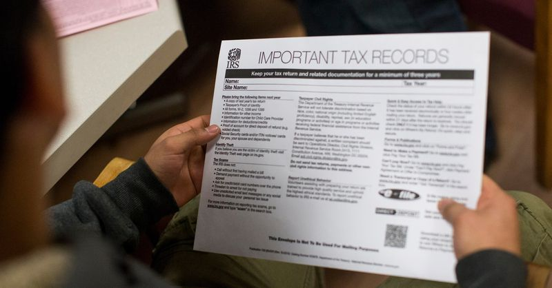
Ông Trump siết nhập cư khiến Mỹ có thể mất gần 500 tỉ USD 🔗 MOI
Năm ngoái, Sở Thuế vụ Mỹ (IRS) đã đạt thỏa thuận chia sẻ tên và địa chỉ của những người nhập cư không giấy tờ với Bộ An ninh nội địa Mỹ - Ảnh: GUARDIAN Mùa thuế vắng bóng người nhập cư Theo báo Guardi
Việt Nam-Ấn Độ thúc đẩy hợp tác kinh tế số, hướng tới mục tiêu 25 tỷ USD 🔗 MOI
Facebook Twitter Lưu bài viết Bản in Copy link Chiều 18/5 (giờ địa phương), Thương vụ Việt Nam tại Ấn Độ, Cục Thương mại điện tử và Kinh tế số (iDEA) thuộc Bộ Công Thương Việt Nam, Marwah Studios và H

Phát huy vai trò chủ đạo của kinh tế nhà nước trong kỷ nguyên mới 🔗 MOI
Kinh tế Thay vì dựa trên quy mô sở hữu, bài viết phân tích vai trò của kinh tế nhà nước trong nền kinh tế Việt Nam theo cách tiếp cận chức năng: ổn định kinh tế vĩ mô, định hướng phát triển và thiết l
Ai Cập triển khai bus điện đường sông 🔗 MOI
Mỗi xe bus đường sông có sức chứa 60 hành khách, dài 19 m, rộng 5,5 m, thuộc hệ thống phương tiện giao thông công cộng đường sông chạy hoàn toàn bằng điện. Giải pháp này nhằm khôi phục giao thông nội
Định vị mới của quan hệ Trung-Mỹ 🔗 MOI
Đáng chú ý, cụm từ “ổn định chiến lược mang tính xây dựng” lần đầu được sử dụng để định vị quan hệ Trung-Mỹ trong giai đoạn mới. Chuyến thăm hai ngày của Tổng thống Mỹ Donald Trump tới Trung Quốc diễn
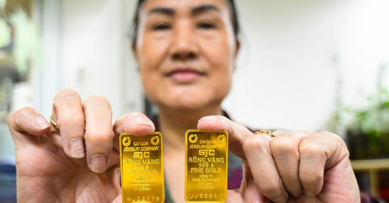
Tối nay, giá vàng bất ngờ đảo chiều đi lên 🔗 MOI
Giá vàng thế giới tăng nhanh sau đó giảm trở lại - Ảnh chụp màn hình Giá vàng miếng SJC về ngưỡng 163 triệu đồng/lượng Nguyên nhân khiến giá vàng thế giới bất ngờ tăng trở lại là do Mỹ đề xuất miễn tr
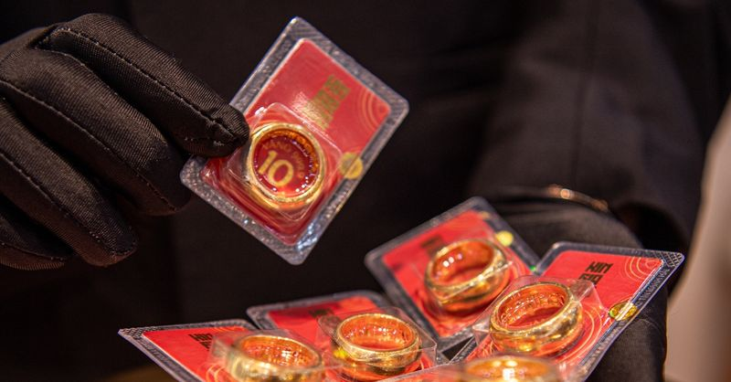
Giá vàng hôm nay 19/5/2026 bật tăng, nguy cơ lao dốc vẫn chưa dừng 🔗 MOI
Giá vàng thế giới hôm nay 19/5/2026 Lúc 21h30 ngày 18/5 (giờ Việt Nam), giá vàng thế giới giao dịch ở mức 4.558 USD/ounce, tăng 17 USD. Giá vàng giao tháng 6/2026 trên sàn Comex New York ở mức 4.574 U
Mỹ lần thứ ba gia hạn cơ chế miễn trừ đối với dầu Nga 🔗 MOI
(PLO)- Mỹ gia hạn thêm 30 ngày cơ chế miễn trừ trừng phạt dầu Nga nhằm giúp đỡ các quốc gia dễ bị tổn thương do cuộc chiến ở Iran. Ngày 18-5, Bộ trưởng Tài chính Mỹ Scott Bessent thông báo gia hạn thê
Mỹ tính chặn xe Trung Quốc nhưng đang 'lệ thuộc' lớn vào linh kiện từ nước này 🔗 MOI
Trong nhiều năm qua, viễn cảnh ô tô Trung Quốc xuất hiện trên đường phố nước Mỹ luôn được mô tả bằng những gam màu u ám. Các chính trị gia và các "ông lớn" của ngành công nghiệp ô tô Mỹ cảnh báo xe gi
Mỹ gia hạn lệnh miễn trừng phạt các lô hàng dầu mỏ Nga trên biển 🔗 MOI
Facebook Twitter Lưu bài viết Bản in Copy link Bộ Tài chính Mỹ ngày 18/5 đã gia hạn lệnh miễn trừ trừng phạt thêm 30 ngày đối với các lô hàng dầu mỏ của Nga đang ở trên biển, trong bối cảnh giá năng l
Giá vàng rơi vào ‘cơn ác mộng’: Cơ hội bắt đáy hay ‘cái bẫy’ mới? 🔗 MOI
Sức ép từ lợi suất trái phiếu Mỹ và đồng bạc xanh mạnh lên đã lấn át hoàn toàn vai trò "nơi trú ẩn an toàn" truyền thống của kim loại quý này. Đây chỉ là nhịp điều chỉnh kỹ thuật trước một đợt tăng gi
TGĐ tập đoàn năng lượng nguyên tử Rosatom cảnh báo nguy cơ thảm họa ở Nhà máy điện hạt nhân Zaporizhzhia 🔗 MOI
(PLO)- Tổng Giám đốc Tập đoàn Năng lượng Nguyên tử Quốc gia Liên bang Nga (Rosatom) Alexey Likhachev nói rằng tình hình xung quanh Nhà máy điện hạt nhân Zaporizhzhia đang trở nên nghiêm trọng do các c
Dự thảo văn kiện Đại hội XIV của Đảng: Nhìn từ lăng kính kinh tế - tài chính 🔗 MOI
Thời sự Dự thảo Báo cáo chính trị trình Đại hội XIV của Đảng đặt mục tiêu tăng trưởng GDP giai đoạn 2026–2030 đạt từ 10%/năm trở lên với định hướng rõ ràng chuyển đổi mô hình tăng trưởng dựa vào khoa
Tin tức thế giới 19-5: Ông Trump tuyên bố hoãn tấn công Iran; Cuba cảnh báo về cuộc 'tắm máu' 🔗 MOI
Tổng thống Mỹ Donald Trump phát biểu tại một sự kiện ngày 18-5 - Ảnh: AFP Ông Trump nói vừa hoãn tấn công Iran Theo Hãng tin Reuters, ngày 19-5, Tổng thống Mỹ Donald Trump đã tuyên bố vừa hoãn cuộc kh

Đổi mới mô hình tăng trưởng gắn với tái cơ cấu nền kinh tế trong giai đoạn mới 🔗 MOI
Pháp luật Triển khai Nghị quyết số 07-NQ/TW ngày 18/11/2016 của Bộ Chính trị về chủ trương, giải pháp cơ cấu lại ngân sách nhà nước, quản lý nợ công, việc cơ cấu lại ngân sách nhà nước, quản lý nợ côn

Tiếp nhận phản ánh kiến nghị của doanh nghiệp 🔗 MOI
HỌ VÀ TÊN * EMAIL * SỐ ĐIỆN THOẠI * ĐỊA CHỈ * TIÊU ĐỀ * FILES ĐÍNH KÈM NỘI DUNG * RadEditor - HTML WYSIWYG Editor. MS Word-like content editing experience thanks to a rich set of formatting tools, dro
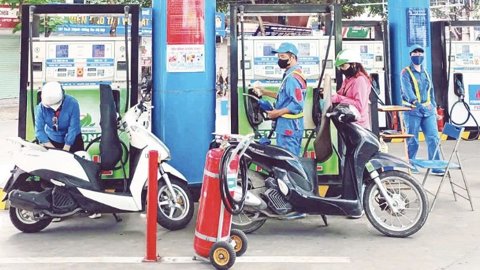
Xăng E10 “phủ sóng” toàn quốc 🔗 MOI
Các doanh nghiệp đã nhanh chóng chuyển đổi hạ tầng pha chế xăng E5 sang E10, đồng thời nâng cấp hệ thống bồn bể, đường ống công nghệ và sức chứa ethanol. Xăng khoáng Ron 95 còn tại các cửa hàng sẽ đượ
Mỹ hủy kế hoạch tấn công Iran theo đề nghị của 3 nước Vùng Vịnh 🔗 MOI
Phóng viên TTXVN tại Washington dẫn lời Tổng thống Mỹ Donald Trump ngày 18/5 tuyên bố hủy kế hoạch tấn công Iran vào ngày 19/5 sau khi lãnh đạo 3 cường quốc khu vực Trung Đông đề nghị ông “tạm hoãn”.
Mỹ “bật đèn xanh” cho Hàn Quốc trong thương vụ trực thăng 4,2 tỷ USD 🔗 MOI
Facebook Twitter Lưu bài viết Bản in Copy link Bộ Ngoại giao Mỹ ngày 18/5 cho biết đã thông qua thương vụ cung cấp trực thăng quân sự trị giá hơn 4 tỷ USD cho Hàn Quốc. Trước đó, Seoul từng cam kết sẽ
Trung tâm Tài chính hàng hải TPHCM Kỳ vọng thu hút hàng trăm tỷ USD 🔗 MOI
Bước nhảy vọt của hạ tầng hàng hải TPHCM đang bước vào giai đoạn phát triển mới của kinh tế biển khi hàng loạt dự án cảng biển quy mô lớn đồng loạt triển khai, tạo nền tảng để thành phố trở thành trun
Thế cuộc Mỹ - Trung - Nga khi ông Putin thăm Bắc Kinh 🔗 MOI
Theo tờ Hoàn Cầu thời báo , chuyến thăm của ông Putin đến Trung Quốc kéo dài từ ngày 19-20.5, trong đó có cuộc hội đàm thượng đỉnh với Chủ tịch nước Trung Quốc Tập Cận Bình . Trung Quốc "nhộn nhịp đối
Chiến sự Trung Đông ngày 81: Mỹ hoãn tấn công Iran theo lệnh ông Trump; Hezbollah phóng tên lửa đất đối không vào chiến đấu cơ Israel 🔗 MOI
Tình hình Trung Đông tiếp tục là tâm điểm sau khi Tổng thống Mỹ Donald Trump nói rằng ông vừa hoãn một cuộc tấn công nhắm vào Iran, vốn sẽ diễn ra trong ngày 19-5. Ông Trump: Mỹ tạm hoãn tấn công Iran
Tổng thống Putin thăm Trung Quốc và những vấn đề được mong đợi 🔗 MOI
(PLO)- Theo lời mời của Chủ tịch Trung Quốc Tập Cận Bình, Tổng thống Nga Vladimir Putin sẽ thăm cấp nhà nước tới Trung Quốc trong hai ngày 19 và 20-5. Theo lời mời của Chủ tịch Trung Quốc Tập Cận Bình

Khơi thông các động lực tăng trưởng kinh tế Việt Nam 🔗 MOI
Pháp luật Nhờ sự phối hợp đồng bộ của chính sách tài khóa và tiền tệ trong việc thúc đẩy cầu trong nước, kinh tế Việt Nam năm 2025 phục hồi mạnh, với tăng trưởng vượt mục tiêu đề ra. Về ổn định kinh t
Cử nhân Mỹ bất an vì thị trường việc làm đảo lộn sau dịch Covid-19 🔗 MOI
Các cử nhân ăn mừng trong lễ tốt nghiệp tổ chức tại sân vận động Yankee, New York ngày 14-5 - Ảnh: Đại học New York Giữa làn sóng cắt giảm chi tiêu từ chính phủ, thuế quan , chiến tranh và sức ép từ t
Nga kỳ vọng lớn vào chuyến thăm Trung Quốc của ông Putin 🔗 MOI
Ông Tập và ông Putin đi dạo tại Trung Nam Hải - trung tâm quyền lực của Đảng Cộng sản Trung Quốc - vào tháng 9-2025 - Ảnh: REUTERS “Chúng tôi có kỳ vọng rất lớn đối với chuyến thăm này. Chúng tôi và c
Tỷ phú Trần Đình Long muốn phân phối điện, bán lẻ ô tô, giường tủ 🔗 MOI
Tỷ phú Trần Đình Long muốn phân phối điện, bán lẻ ô tô, giường tủ Theo An Thái | 19/05/2026 06:42 AM | Kinh doanh Theo dõi Cafebiz.vn trên Tập đoàn cũng bổ sung thêm loạt ngành liên quan đến công nghệ
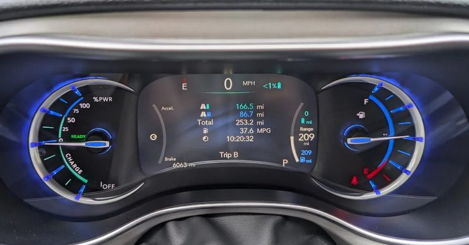
Hơn 20.000 ô tô cũ bị lộ tua ODO: Chiêu lừa ngày càng tinh vi vì đồng hồ điện tử 🔗 MOI
Mua ô tô cũ luôn được xem là "canh bạc" với nhiều người tiêu dùng. Ngoài việc khó xác định chiếc xe đã được sử dụng và bảo dưỡng ra sao, người mua còn có nguy cơ gặp phải những chiếc xe bị tua số km đ
“Cuộc đời thứ hai” cho xe cổ 🔗 MOI
Trong bối cảnh ngành công nghiệp ô-tô tăng tốc hướng tới tương lai điện hóa, mạng lưới chuyển đổi xe điện Fuel2Electric gồm các nhà cung cấp thiết bị và chuyên gia cơ khí tại Mỹ, đã nhanh chóng mở dịc
Toàn cảnh dự án của các đại gia vàng bạc lấn sân bất động sản: DOJI làm tòa nhà cao nhất Hải Phòng, Bảo Tín Minh Châu mới ở vạch xuất phát? 🔗 MOI
TIN MỚI Không chỉ là những "ông lớn" giữ vị thế áp đảo trong ngành kim hoàn, nay các đại gia vàng bạc đá quý cũng đang rốt ráo gia nhập đường đua bất động sản với những dự án quy mô hàng nghìn tỷ đồng

Báo cáo tài chính doanh nghiệp 🔗 MOI
Kido dự kiến sắp xếp lại cơ cấu sở hữu các công ty dầu ăn trong hệ sinh thái, với Tường An giữ vai trò trung tâm, qua đó chuẩn bị cho kế hoạch IPO và niêm yết doanh nghiệp này trên HoSE trong thời gia
Năng lượng & Khoáng sản 🔗 MOI
Ngày 9/4, Ủy ban Thường vụ Quốc hội đã cho ý kiến về dự thảo Nghị quyết của Quốc hội về việc ban hành một số quy định về thuế bảo vệ môi trường, thuế giá trị gia tăng, thuế tiêu thụ đặc biệt đối v
Mục tiêu đón 50 triệu khách quốc tế: Du lịch Việt cần cú hích gì? 🔗 MOI
(PLO)- Mục tiêu đón 50 triệu lượt khách quốc tế vào năm 2030 đòi hỏi ngành du lịch bứt phá mạnh mẽ về hạ tầng, chính sách thị thực và năng lực cạnh tranh điểm đến. Dự thảo Đề án “Phát triển du lịch t
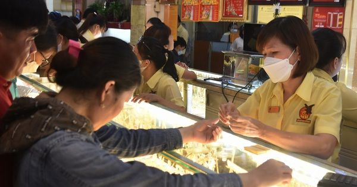
Giá vàng hôm nay 19-5: Tăng mạnh trở lại 🔗 MOI
Giá vàng hôm nay bật tăng trở lại Khoảng 6 giờ ngày 19-5 (giờ Việt Nam), giá vàng hôm nay trên thị trường quốc tế giao dịch ở mức 4.574 USD/ounce, tăng 44 USD so với mức thấp nhất trong phiên đêm qua
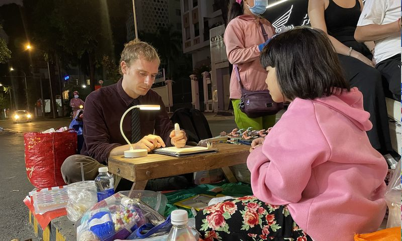
Lớp học trên vỉa hè của chàng trai người Anh 🔗 MOI
Đúng 20h, Christopher, 35 tuổi, bắt xe ôm công nghệ đến ngã tư Pasteur - Võ Thị Sáu, phường Xuân Hòa. Cạnh cây xăng gần đó, bé Thanh Hiền, 9 tuổi, đã ngồi sẵn cùng sách vở mở trên bàn. Christopher trả
Iran hoan nghênh nỗ lực ngoại giao của Bắc Kinh 🔗 MOI
Iran đồng thời khẳng định nước này hoan nghênh mọi nỗ lực hỗ trợ vai trò ngoại giao của Trung Quốc trong việc cố gắng tháo ngòi nổ khu vực. Theo CNN , sau Hội nghị Bộ trưởng Ngoại giao Nhóm các nền ki
2 kỳ thủ mắc bệnh hiếm khuynh đảo làng cờ tướng Trung Quốc 🔗 MOI
Tả Văn Tĩnh là ngôi sao đang lên trong làng cờ tướng nữ Trung Quốc - Ảnh: BAIDU Triệu Phàn Vĩ (sinh năm 1992) ngày càng trở thành cái tên quen thuộc với làng cờ tướng đỉnh cao Trung Quốc - từ câu chuy
Phát hiện công ty ở TP.HCM mở chi nhánh làm dầu gió giả tại Tây Ninh 🔗 MOI
Lực lượng chức năng kiểm tra nơi sản xuất dầu gió giả - Ảnh: A.L. Ngày 18-5, Công an tỉnh Tây Ninh cho biết đang điều tra vụ việc có dấu hiệu tội sản xuất, buôn bán hàng giả và xâm phạm quyền sở hữu c
Lịch trực tiếp bán kết U17 châu Á 2026: Trung Quốc đấu Úc 🔗 MOI
Lịch trực tiếp bán kết U17 châu Á 2026: Trung Quốc đấu Úc - Đồ họa: AN BÌNH Bán kết Giải U17 châu Á 2026 là cuộc đối đầu giữa U17 Nhật Bản - U17 Uzbekistan (22h ngày 19-5) và U17 Trung Quốc - U17 Úc (
Mổ xẻ dòng thiết giáp hạm hạt nhân mang tên Trump 🔗 MOI
Tàu chiến lớp Trump được công bố ngày 22-12-2025 - Ảnh: AFP Tuy nhiên ngay khi kế hoạch được đưa ra, nhiều chuyên gia quốc phòng đã đặt câu hỏi về tính khả thi của dự án, từ chi phí khổng lồ, năng lực
Trung Đông tối 18-5: Iran lập cơ quan quản lý eo biển Hormuz; Mỹ kêu gọi G7 chặn tiền vào Iran 🔗 MOI
Một tàu chở dầu tại eo biển Hormuz, ngoài khơi Bandar Abbas, Iran ngày 2-5 - Ảnh: AP Iran thông báo thành lập cơ quan mới để quản lý eo biển Hormuz Ngày 18-5, Hội đồng An ninh quốc gia tối cao Iran th
Reuters: Pakistan triển khai máy bay chiến đấu và 8.000 quân tới Saudi Arabia 🔗 MOI
Máy bay chiến đấu JF-17 Thunder của Không quân Pakistan tập trận tại biển Ả Rập, gần Karachi, Pakistan - Ảnh: REUTERS Hãng tin Reuters ngày 18-5 dẫn lời ba quan chức an ninh và hai nguồn tin chính phủ

Kiến tạo không gian phát triển mới cho kinh tế tập thể 🔗 MOI
Pháp luật Trong giai đoạn 2021-2025, dựa vào mục tiêu phát triển, điều kiện ngân sách và nhu cầu hỗ trợ, năng lực của các hợp tác xã, Thủ tướng Chính phủ đã ban hành Chương trình hỗ trợ phát triển kin

Nhìn lại 1 năm thực thi Nghị quyết 68-NQ/TW 🔗 MOI
Doanh nghiệp Sau 1 năm triển khai Nghị quyết số 68-NQ/TW, nhiều doanh nghiệp công nghệ Việt ghi nhận những chuyển biến tích cực từ môi trường kinh doanh, cơ chế hỗ trợ và tư duy điều hành theo hướng k
Tạp chí Kinh tế Sài Gòn 🔗 MOI
Kinh tế Sài Gòn giữ bản quyền nội dung của trang web thesaigontimes.vn. Không sử dụng lại nội dung trên trang này dưới mọi hình thức, trừ khi được Kinh tế Sài Gòn đồng ý bằng văn bản. Trang ngoài sẽ đ
Tạp chí Kinh tế Sài Gòn 🔗 MOI
Kinh tế Sài Gòn giữ bản quyền nội dung của trang web thesaigontimes.vn. Không sử dụng lại nội dung trên trang này dưới mọi hình thức, trừ khi được Kinh tế Sài Gòn đồng ý bằng văn bản. Trang ngoài sẽ đ
Tạp chí Kinh tế Sài Gòn 🔗 MOI
Kinh tế Sài Gòn giữ bản quyền nội dung của trang web thesaigontimes.vn. Không sử dụng lại nội dung trên trang này dưới mọi hình thức, trừ khi được Kinh tế Sài Gòn đồng ý bằng văn bản. Trang ngoài sẽ đ
Tạp chí Kinh tế Sài Gòn 🔗 MOI
Kinh tế Sài Gòn giữ bản quyền nội dung của trang web thesaigontimes.vn. Không sử dụng lại nội dung trên trang này dưới mọi hình thức, trừ khi được Kinh tế Sài Gòn đồng ý bằng văn bản. Trang ngoài sẽ đ
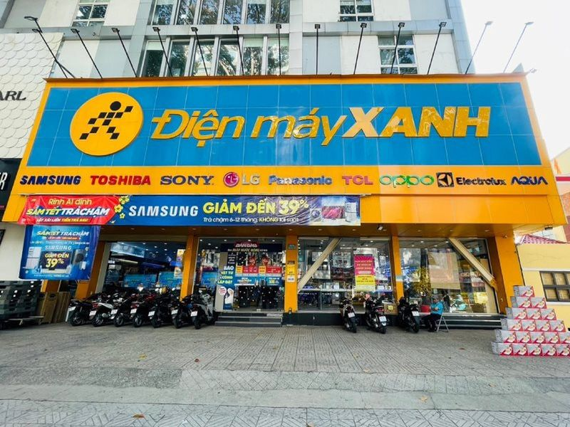
Ông Nguyễn Đức Tài lặng lẽ kiếm 1.000 tỷ dễ như chơi: Âm thầm xây dựng một “gã khổng lồ” mới? 🔗 MOI
Ông Nguyễn Đức Tài lặng lẽ kiếm 1.000 tỷ dễ như chơi: Âm thầm xây dựng một “gã khổng lồ” mới? Theo PV | 19/05/2026 06:56 AM | Kinh doanh Theo dõi Cafebiz.vn trên Nếu quy đổi theo tỷ suất doanh thu hàn
Ông Trump hoãn kế hoạch đánh Iran vào ngày 19/5 🔗 MOI
Tổng thống Mỹ Donald Trump. Ảnh: WANA Theo hãng tin CNN, trong một bài đăng trên mạng xã hội Truth Social ngày 18/5, ông Trump tuyên bố đã chỉ thị cho các quan chức Mỹ chuẩn bị sẵn sàng để tiến hành m
Nghiên cứu sinh Việt biến lá rụng thành nhựa tự hủy 🔗 MOI
Ninh Phạm Thành Trung, 28 tuổi, sinh ra ở Bình Dương cũ (nay là TP HCM), hiện là nghiên cứu sinh tiến sĩ tại Viện Khoa học và Công nghệ tiên tiến Hàn Quốc (KAIST). Tại đây, anh tập trung nghiên cứu vậ
Iran gửi đề xuất 14 điểm mới cho Mỹ 🔗 MOI
Hãng tin Tasnim hôm thứ Hai (18/5) dẫn một nguồn thạo tin cho biết, Pakistan sẽ chuyển đề xuất mới của Iran cho Washington. Theo nguồn tin, nội dung tập trung vào các bước đàm phán và các biện pháp xâ
Iran tuyên bố sẽ kiện Mỹ và Israel ra toà 🔗 MOI
Cung điện Golestan, một di sản thế giới được UNESCO công nhận, ở Tehran bị hư hại vì các cuộc tấn công của Mỹ và Israel. (Ảnh: AP) Trong bài đăng trên mạng xã hội, ông Gharibabadi cho biết, ít nhất 14
Nhạc trưởng Đồng Quang Vinh kể cuộc điện thoại bất ngờ của nguyên Thủ tướng Phạm Minh Chính 🔗 MOI
LỜI TÒA SOẠN: Trong mỗi dàn nhạc giao hưởng, nhạc trưởng là người dẫn đường và kết nối các nhạc công. Công việc của nhạc trưởng đòi hỏi sự kiên nhẫn, khổ luyện, trách nhiệm cũng như khát vọng lớn tron
Cựu nhân viên ngân hàng tranh tài ở World Cup 2026 🔗 MOI
Vừa làm ngân hàng vừa đá bóng Sinh ra và lớn lên tại Dublin (Cộng hòa Ireland), Roberto Lopes từng có một cuộc sống khá bình lặng. Khi còn khoác áo Bohemians hồi 2016, anh chỉ là một cầu thủ bán thời
Kho hạt nhân Nga - Mỹ và cuộc cạnh tranh sức mạnh chiến lược toàn cầu 🔗 MOI
Xem nhanh: Kho vũ khí hạt nhân của Nga Kho vũ khí hạt nhân của Mỹ So sánh tổng quan Kho vũ khí hạt nhân của Nga Nga hiện là quốc gia sở hữu kho vũ khí hạt nhân lớn nhất thế giới tính theo tổng số đầu
Chiến sự Ukraine ngày 1.545: Nga đánh trả dữ dội nhưng đề nghị khôi phục đàm phán 🔗 MOI
Nga tấn công Ukraine, tàu hàng Trung Quốc bị hư hại Ngày 18.5, Không quân Ukraine cho biết Nga đã phóng 524 UAV và 22 tên lửa, trong đó có 14 tên lửa đạn đạo sang Ukraine vào rạng sáng cùng ngày. Tron

Chuyên đề Agribank 🔗 MOI
Trước áp lực thực thi Nghị định số 70/2025/NĐ-CP về hóa đơn điện tử và quản lý thuế, Agribank tổ chức hội nghị tập huấn toàn quốc, thống nhất quy trình hỗ trợ và giới thiệu gói giải pháp số dành riêng

TỔNG QUAN TỔNG QUAN KINH TẾ 🔗 MOI
Kinh tế Hoạt động điều hành chính sách tài khóa năm 2025 diễn ra trong bối cảnh tình hình kinh tế trong nước và quốc tế tiếp tục diễn biến phức tạp, căng thẳng thương mại toàn cầu gia tăng, đặc biệt l
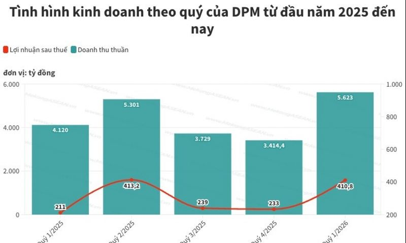
Hưởng lợi từ giá phân bón, DPM lãi lớn quý đầu năm 🔗 MOI
Báo sau thuế hơn 410 tỷ đồng trong quý 1/2026, DPM đã hoàn thành tới 60% mục tiêu lợi nhuận năm chỉ sau một quý đầu năm. Ảnh: PVFCCo - Phú Mỹ. Tổng công ty Phân bón và Hóa chất Dầu khí (PVFCCo -
Phấn đấu nâng kim ngạch thương mại Việt Nam - Croatia lên gấp đôi 🔗 MOI
Thủ tướng Lê Minh Hưng đề nghị Việt Nam - Croatia tạo chuyển biến thực chất trong hợp tác kinh tế - thương mại và đầu tư; phấn đấu nâng kim ngạch thương mại song phương lên gấp đôi so với mức 161 triệ

Tiếp nhận phản ánh kiến nghị của công dân 🔗 MOI
HỌ VÀ TÊN * EMAIL * SỐ ĐIỆN THOẠI * ĐỊA CHỈ * TIÊU ĐỀ * FILES ĐÍNH KÈM NỘI DUNG * RadEditor - HTML WYSIWYG Editor. MS Word-like content editing experience thanks to a rich set of formatting tools, dro
Ấn Độ và Thụy Điển nâng cấp quan hệ lên Đối tác chiến lược 🔗 MOI
Tại cuộc hội đàm giữa hai nhà lãnh đạo, Thủ tướng Thụy Điển Ulf Kristersson khẳng định, chuyến thăm của người đồng cấp Ấn Độ là dấu mốc quan trọng trong quan hệ song phương và hai nước đặt mục tiêu tă
Nắm quyền tác giả không đồng nghĩa được khai thác đa nền tảng 🔗 MOI
Từ đêm nhạc bán vé đến video kiếm tiền Trong vụ việc BH Media và một số sân khấu âm nhạc bị khởi tố, điều khiến nhiều người bất ngờ là các thương hiệu này không hoạt động chui hay thiếu đầu tư, trái l
Minh bạch thị trường vàng trang sức 🔗 MOI
TIN MỚI Bộ Khoa học và Công nghệ đang lấy ý kiến dự thảo thông tư mới về quản lý đo lường và chất lượng đối với vàng miếng, vàng trang sức, mỹ nghệ và vàng nguyên liệu. Dự thảo thay thế Thông tư 22/20
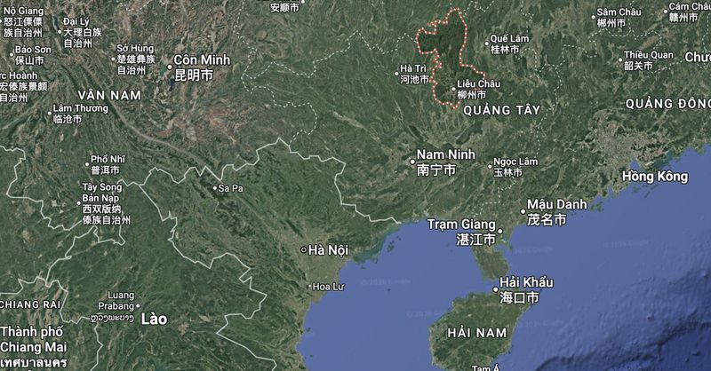
Động đất ở Trung Quốc, Hà Nội rung lắc 🔗 MOI
Liễu Châu (Trung Quốc) - nơi xảy ra động đất mạnh 5,2 độ - cách Hà Nội hơn 500km, tính theo đường chim bay - Ảnh: Google Map Thông tin với Tuổi Trẻ Online tối 18-5, ông Nguyễn Xuân Anh - Viện trưởng V

Ấn phẩm 🔗 MOI
Tạp chí Kinh tế - Tài chính Online. Cơ quan chủ quản: Bộ Tài chính Giấy phép xuất bản số: 107/GP-BVHTTDL ngày 26/8/2025. Tạp chí Kinh tế - Tài chính Online: e-ISSN 3093-3498.

Chính phủ với doanh nghiệp 🔗 MOI
20/03/2026 (Chinhphu.vn) - Chính phủ ban hành Nghị quyết số 11/2026/NQ-CP về chi phí tiền lương Ngân hàng thương mại TNHH một thành viên Xây dựng Việt Nam, Ngân... 04/03/2026 (Chinhphu.vn) - Chính phủ
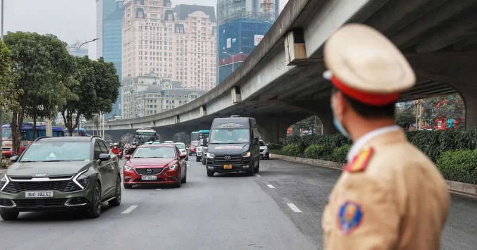
Thẩm định nhiều chính sách mới về trật tự, an toàn giao thông đường bộ 🔗 MOI
Thứ nhất, quy định chi tiết hơn về cấu trúc và trách nhiệm xây dựng Cơ sở dữ liệu về trật tự, an toàn giao thông đường bộ. Trong đó, Bộ Công an chủ trì quản lý dữ liệu về đăng ký xe, giấy phép lái xe,
TP HCM từ biểu tượng Đổi mới đến bài toán giữ vị thế đầu tàu 🔗 MOI
Năm 1991, khi kinh tế Việt Nam còn dè dặt với mô hình thị trường, TP HCM chọn Tân Thuận như một phép thử táo bạo. Thành phố hợp tác với nhà đầu tư Đài Loan xây dựng khu chế xuất theo mô hình mới với h
Chú rể Ninh Bình bật khóc khi nhận được 4 chỉ vàng của người bố đã mất 26 năm 🔗 MOI
Kỷ vật được gìn giữ suốt 26 năm Nguyễn Quang Đạt (SN 1994) sinh ra trong một gia đình nghèo ở xã Nam Trực, tỉnh Ninh Bình. Bố anh qua đời vì bệnh tật vào năm 2000, khi đó anh mới 6 tuổi, còn em gái 4
Chủ tịch Phạm Minh Hương: Cơ hội lớn chưa từng có đang mở ra, VNDirect chuẩn bị "comeback" 🔗 MOI
VND: Giá hiện tại Thay đổi Xem hồ sơ doanh nghiệp TIN MỚI VNDirect chuẩn bị “comeback lại đường đua” Chia sẻ tại ĐHĐCĐ thường niên năm 2026, bà Phạm Minh Hương - Chủ tịch HĐQT VNDirect cho rằng sau nh
Doanh nghiệp TP HCM muốn phát triển du lịch concert 🔗 MOI
Trong lễ ký kết chiều 18/5, DatVietVAC Group Holdings và Tổng Công ty Du lịch Sài Gòn (Saigontourist Group) cho biết sẽ hợp tác chiến lược trong 7 năm. Mục tiêu trọng tâm của liên minh này là thúc đẩy

Kiểm soát lạm phát trước những "biến số" cuối năm 🔗 MOI
Tài chính Tại Nghị quyết số 86/NQ-CP ngày 4/11/2025 về triển khai nhiệm vụ trọng tâm những tháng cuối năm 2025, Chính phủ tiếp tục yêu cầu về kiểm soát lạm phát, giữ vững ổn định kinh tế vĩ mô. Trong

Trẻ sinh ra di truyền giang mai từ mẹ có điều trị được không? 🔗 MOI
Tra cứu nhanh bản thân có bị nợ thuế và tạm hoãn xuất cảnh không 🔗 MOI
4 trường hợp bị tạm hoãn xuất cảnh do nợ thuế Điều 3 Nghị định 49/2025/NĐ-CP quy định về áp dụng ngưỡng tiền thuế nợ và thời gian nợ trong các trường hợp bị tạm hoãn xuất cảnh như sau: 1. Cá nhân kinh
Bụi mù mịt trên cao tốc Quảng Ngãi - Hoài Nhơn vì thi công trạm dừng nghỉ 🔗 MOI
Bụi mù mịt, khuất tầm nhìn tài xế chạy trên cao tốc - Ảnh: CỤC CẢNH SÁT GIAO THÔNG Ngày 18-5, lãnh đạo ban điều hành dự án cao tốc Quảng Ngãi - Hoài Nhơn cho biết đã yêu cầu chủ đầu tư và nhà thầu thi
Chủ tịch Phạm Minh Hương: VNDIRECT sẽ quay lại đường đua 🔗 MOI
Bà Phạm Minh Hương (trái) - Chủ tịch Chứng khoán VNDIRECT và ông Nguyễn Vũ Long - Tổng giám đốc - Ảnh: Đ.T VNDIRECT rớt bớt thị phần, vì sao? Bà Hương thẳng thắn thừa nhận việc VND đã đánh mất một phầ
Nga không can thiệp vào đàm phán Mỹ - Iran 🔗 MOI
Ngoại trưởng Nga Sergey Lavrov - Ảnh: AFP “ Iran , cũng như bất kỳ thành viên nào khác của Hiệp ước Không phổ biến vũ khí hạt nhân, có đầy đủ quyền làm giàu uranium vì mục đích hòa bình”, Ngoại trưởng
Xác định 4 đội vào bán kết Giải bóng chuyền Cúp VTV9 - Bình Điền 2026 🔗 MOI
LPBank Ninh Bình giành vé vào bán kết Cúp VTV9 - Bình Điền - Ảnh: ĐỨC PHƯƠNG Trước đó, bảng A đã xác định 2 đại diện vào bán kết: Giang Tô (Trung Quốc, nhất bảng) và VTV Bình Điền Long An (nhì bảng).
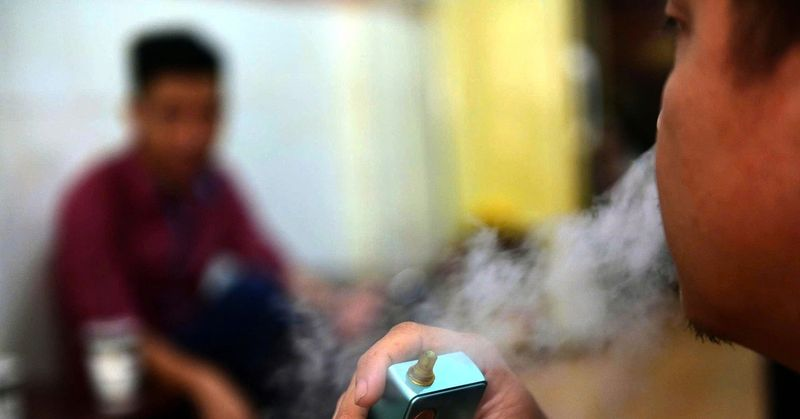
Nên khuyến khích tố giác người cung cấp và người sử dụng thuốc lá điện tử 🔗 MOI
Cần xử phạt nghiêm chủ quán, nơi để khách nhả khói thuốc lá điện tử - Ảnh: Q.Đ. Và quan trọng hơn, các chất cấm, chất gây nghiện sẽ được loại trừ nhanh chóng hơn trong đời sống của một bộ phận giới tr

Huy động tài chính xanh hướng tới mục tiêu phát triển bền vững 🔗 MOI
Pháp luật Chuyển đổi năng lượng xanh đã trở thành xu thế toàn cầu mang tính bắt buộc, gắn liền với mục tiêu Net Zero và yêu cầu cạnh tranh trong chuỗi cung ứng quốc tế. Trong bối cảnh đó, doanh nghiệp
Tàu Hải quân Thái Lan cập cảng Nhà Rồng, kỷ niệm 50 năm quan hệ hai nước 🔗 MOI
Đại tá Phạm Tiến Dũng, Phó tham mưu trưởng Bộ Tư lệnh Vùng 2 Hải quân Việt Nam (bên phải) chào đón Chuẩn đô đốc Thaveesak Thongnam, Phó tư lệnh Vùng 1 Hải quân Hoàng gia Thái Lan, cùng lực lượng hải q
Tổng Bí thư, Chủ tịch nước Tô Lâm nêu 6 định hướng Đồng Nai thành đô thị giàu năng lực cạnh tranh 🔗 MOI
Tổng Bí thư, Chủ tịch nước Tô Lâm phát biểu chỉ đạo - Ảnh: TTXVN Đồng Nai hội tụ nhiều lợi thế chiến lược Tối 18-5, tại lễ công bố thành lập thành phố Đồng Nai , Tổng Bí thư, Chủ tịch nước Tô Lâm đánh
Tổng Bí thư, Chủ tịch nước Tô Lâm làm việc với Ban Thường vụ Thành ủy Đồng Nai 🔗 MOI
Tổng Bí thư, Chủ tịch nước Tô Lâm và Đoàn công tác của Trung ương đến làm việc với Ban Thường vụ Thành ủy Đồng Nai - Ảnh: Thống Nhất/TTXVN Cùng dự có các đồng chí Ủy viên Bộ Chính trị, Bí thư Trung ươ
Nghệ An khai hội Làng Sen, lan tỏa khát vọng phát triển 🔗 MOI
Chương trình nghệ thuật ở Lễ hội Làng Sen năm 2026 được dàn dựng công phu, đặc sắc - Ảnh: TÂM PHẠM Tối 18-5, tại sân vận động Làng Sen, xã Kim Liên, tỉnh Nghệ An long trọng tổ chức khai mạc Lễ hội Làn
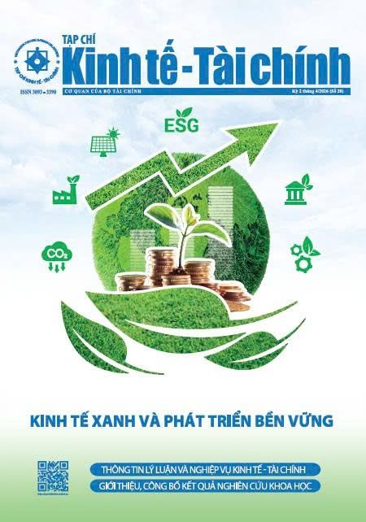
Tạp chí Kinh tế Tài chính kỳ 2 tháng 4/2026 🔗 MOI
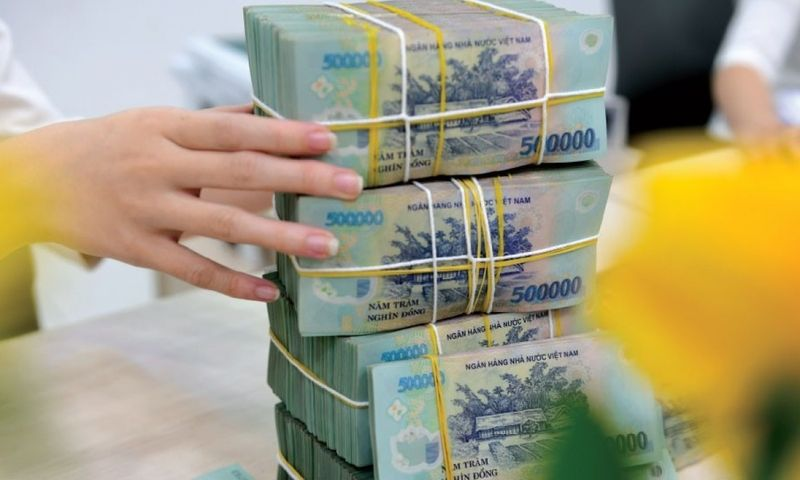
Nhóm ngân hàng Big4 có thêm dư địa tăng trưởng tín dụng 🔗 MOI
Theo MBS, quy định mới cho phép ngân hàng tính 20% tiền gửi có kỳ hạn của Kho bạc Nhà nước vào tỷ lệ cho vay trên huy động (LDR), giúp giảm áp lực thanh khoản và nới room tín dụng. Trong bối cảnh huy

Góc chuyên gia & nhà quản lý 🔗 MOI
Trí tuệ nhân tạo (AI) đang thay đổi cách ngân hàng vận hành, từ phát hiện gian lận, quản trị rủi ro đến chăm sóc khách hàng. Tuy nhiên, theo chuyên gia của HSBC, trong lĩnh vực tài chính - ngân hàng,
Bảo vệ nhà đầu tư trước “cơn sốt” tài sản mã hóa 🔗 MOI
Chứng khoán Trong bối cảnh Việt Nam đang từng bước xây dựng khung pháp lý và chuẩn bị thí điểm thị trường tài sản mã hóa theo Nghị quyết số 05/2025/NQ-CP của Chính phủ, bài toán về an toàn hệ thống, m

Kỷ niệm 51 năm Ngày Giải phóng miền Nam, thống nhất đất nước: Tự chủ chiến lược, kiến tạo thịnh vượng 🔗 MOI
Kinh tế Trong bối cảnh cạnh tranh thu hút đầu tư công nghệ ngày càng quyết liệt, Việt Nam đang chủ động mở cánh cửa ra thế giới để đón các “đại bàng công nghệ”, coi đây là động lực quan trọng để chuyể
Tổng Bí thư, Chủ tịch nước làm việc với Thành ủy Đồng Nai 🔗 MOI
Tổng Bí thư, Chủ tịch nước Tô Lâm yêu cầu kiến tạo mô hình tăng trưởng mới, đưa Đồng Nai vượt khỏi giới hạn của một trung tâm công nghiệp truyền thống. Tổng Bí thư, Chủ tịch nước Tô Lâm và Đoàn công t
'Đồng Nai phải đặt mình vào những chuẩn mực phát triển cao hơn' 🔗 MOI
Tổng Bí thư, Chủ tịch nước Tô Lâm nhấn mạnh, Đồng Nai phải tự đặt mình vào những chuẩn mực phát triển cao hơn, vươn lên thành một đô thị động lực, có sức lan tỏa lớn đối với vùng Đông Nam Bộ và cả nướ

Nước CHXHCN Việt Nam 🔗 MOI
© Cổng Thông tin điện tử Chính phủ Tổng Giám đốc: Nguyễn Hồng Sâm Trụ sở: 16 Lê Hồng Phong - Ba Đình - Hà Nội. Điện thoại: Văn phòng: 080 43162; Fax: 080.48924 Email: thongtinchinhphu@chinhphu.vn Bản
Đi bộ trong nhà hay ngoài trời tốt hơn? 🔗 MOI
Đi bộ ngoài trời giúp cải thiện tâm trạng Một trong những lợi ích nổi bật nhất của đi bộ ngoài trời là cải thiện tâm trạng. Khi đi bộ ở công viên, khu có cây xanh hoặc không gian thoáng đãng, nhiều ng
Việt Nam-Nga: Đưa hợp tác giữa Hà Nội và Saint Petersburg đi vào thực chất 🔗 MOI
Facebook Twitter Lưu bài viết Bản in Copy link Trong khuôn khổ chuyến làm việc tại Liên bang Nga, ngày 18/5, Đoàn đại biểu thành phố Hà Nội do đồng chí Phùng Thị Hồng Hà, Phó Bí thư Thành ủy, Chủ tịch
Mỹ: Xả súng tại nhà thờ Hồi giáo ở San Diego khiến 3 người thiệt mạng 🔗 MOI
Phóng viên TTXVN tại Mỹ dẫn thông tin từ cảnh sát địa phương xác nhận đã xảy ra vụ xả súng tại khu phức hợp nhà thờ Hồi giáo ở thành phố San Diego, bang California, trong ngày 18/5. Vụ việc khiến 3 ng
Động đất ở Trung Quốc, người dân Hà Nội cảm nhận rõ rung lắc 🔗 MOI
Động đất ở Trung Quốc, người dân Hà Nội cảm nhận rõ rung lắc Theo Minh Tuệ/VTC | 19/05/2026 06:49 AM | Xã hội Theo dõi Cafebiz.vn trên Trận động đất xảy ra tại khu vực thành phố Liễu Châu, Trung Quốc,
Pax Thiên dập tắt tin đồn 🔗 MOI
Tối 18/5 (giờ địa phương), Daily Mail chia sẻ loạt hình ảnh mới nhất về Angelina Jolie và các con. Angelina được thấy xuất hiện tại trường Cao đẳng Spelman ở thành phố Atlanta, Georgia, Mỹ, để tham gi
Hà Nội dẫn đầu về số lượng học sinh dự Vòng Chung kết Quốc gia AIMO 🔗 MOI
Đây cũng là địa phương sở hữu nhiều trường có đông thí sinh góp mặt nhất mùa giải năm nay. Theo thống kê từ Ban tổ chức, Thành phố Hà Nội hiện là địa phương có số lượng thí sinh đăng ký tham dự Vòng C
Hành trình tìm lại âm thanh 🔗 MOI
Sau phẫu thuật cấy ốc tai điện tử và huấn luyện âm ngữ trị liệu, em N.N.V.K (11 tuổi, ngụ TP HCM) đã nghe nói, giao tiếp tốt, sự kiện khiến gia đình không khỏi vui mừng. Nhiều nguyên nhân lộ diện Theo
Mạch nguồn văn hóa Hồ Chí Minh trong dòng chảy nửa thế kỷ - Bài 4: Không gian văn hóa Hồ Chí Minh - Mệnh lệnh hành động và bệ phóng kiến tạo tương lai 🔗 MOI
* PHÓNG VIÊN: Thưa đồng chí, nhiệm vụ xây dựng Không gian văn hóa Hồ Chí Minh đã được xác định trong Nghị quyết Đại hội XI của Đảng bộ TPHCM, nhiệm kỳ 2020-2025 và tiếp tục được Ban Chấp hành Đảng bộ
Chủ tịch Miguel Diaz-Canel: Bất kỳ hành động nào nhằm vào Cuba sẽ ảnh hưởng đến hoà bình khu vực 🔗 MOI
Chủ tịch Cuba Miguel Diaz-Canel. (Ảnh: AP) “Chúng ta đã biết những lời đe doạ về hành động quân sự nhằm vào Cuba từ cường quốc quân sự đứng đầu thế giới”, Chủ tịch Diaz-Canel viết trong một bài đăng t
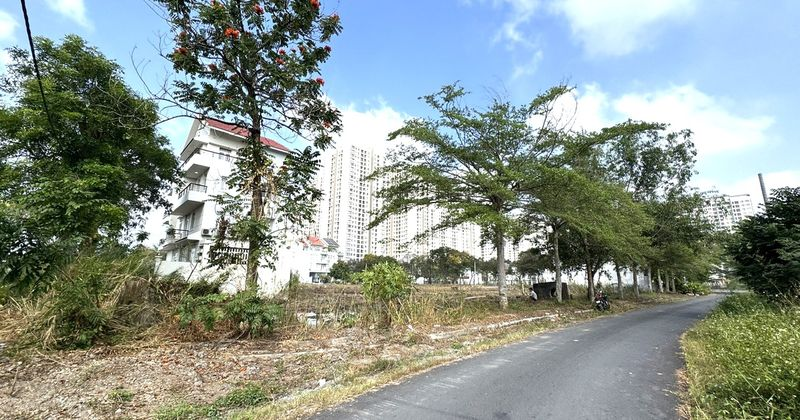
Cần cơ chế xử lý các dự án tồn đọng kéo dài 🔗 MOI
Buộc chủ đầu tư phải thực hiện dự án bằng mọi cách Theo ông Lê Hoàng Châu, Chủ tịch Hiệp hội Bất động sản (BĐS) TP.HCM ( HoREA ), lãnh đạo UBND TP.HCM đã có chỉ thị các sở ngành, địa phương nghiêm túc
Nguyên nhân bụi mù mịt trên cao tốc Quảng Ngãi - Hoài Nhơn gây nguy hiểm cho lái xe 🔗 MOI
Ngày 18/5, lãnh đạo ban điều hành dự án cao tốc Quảng Ngãi - Hoài Nhơn cho biết, đã yêu cầu chủ đầu tư và nhà thầu thi công trạm dừng nghỉ Đình Cương tạm dừng thi công, khắc phục tình trạng bụi mù mịt
Tiến sĩ vật lý 28 tuổi rời đại học top 10 đến Trung Quốc sau đột phá về siêu dẫn 🔗 MOI
Quyết định gây chú ý của nhà khoa học trẻ Nhà khoa học 28 tuổi Stephen Lin Er Chow gia nhập Đại học Chiết Giang (Trung Quốc) từ đầu năm 2026 thông qua chương trình “100 giáo sư trẻ” - sáng kiến tuyển
Những loại xe nào cần lưu ý? 🔗 MOI
Hầu hết các xe đều thích nghi với xăng E10 Loay hoay dắt chiếc xe máy hiệu Air Blade có tuổi thọ gần 20 năm ra khỏi nhà để đi chợ, bà Trương Ngọc Yến, ngụ P.Cát Lái (TP.HCM) băn khoăn nói rằng bà khôn
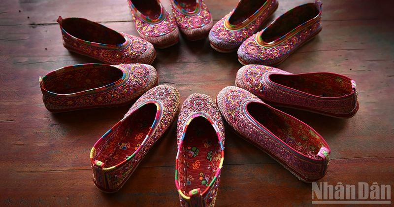
[Ảnh] Giữ nghề làm giày thêu “liển hài” ở bản vùng cao Điện Biên 🔗 MOI
Để hoàn thiện một đôi giày thêu truyền thống , phụ nữ Xạ Phang thường mất từ 10 đến 12 ngày. Tất cả công đoạn từ tìm nguyên liệu trong rừng, tạo đế, thêu hoa văn cho đến ráp thân giày đều được làm hoà
Vì sao bùn có thể là chìa khóa trong cuộc đua vũ trang siêu vượt âm? 🔗 MOI
Bùn đỏ. Ảnh: Maxtonco.com Theo trang Popular Mechanics, bùn đỏ còn được gọi là cặn bauxite, là phó phẩm của quá trình khai thác nhôm và thường bị vứt bỏ như chất thải công nghiệp. Nó chứa các kim loại
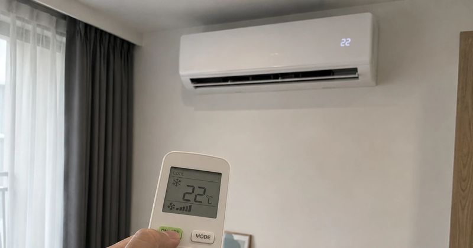
'Thủ phạm' khiến hóa đơn tiền điện tăng vọt 🔗 MOI
Chia sẻ với PV Tiền Phong ngày 18/5, ông Nguyễn Hữu Khánh - Phó Tổng Giám đốc Tổng Công ty Điện lực miền Trung - cho hay, mới đầu mùa hè nhưng lượng điện tiêu thụ đã bắt đầu “nóng” theo từng ngày. “Và
'Đứng ngồi không yên' vì nhà đất đang thế chấp ngân hàng thì bị... giải tỏa 🔗 MOI
Người dân lo lắng Thời gian gần đây nhiều hộ dân lo lắng khi đất nằm trong quy hoạch hoặc thuộc diện thu hồi phục vụ các dự án hạ tầng, chỉnh trang đô thị như trục đại lộ cảnh quan sông Hồng . Theo đó
Tổng Bí thư, Chủ tịch nước Tô Lâm: Đưa Đồng Nai vượt khỏi giới hạn trung tâm công nghiệp truyền thống 🔗 MOI
Tối 18-5, tại Quảng trường Long Hưng, Đồng Nai tổ chức lễ công bố nghị quyết của Quốc hội về việc thành lập TP Đồng Nai. Sự kiện thể hiện quyết tâm của Đảng bộ, chính quyền và nhân dân TP trong việc x
Chính quyền Mỹ 'dọn đường' để sa thải nhân sự ngành y tế 🔗 MOI
Một bản ghi nhớ nội bộ của HHS tiết lộ đối tượng bị nhắm đến trong làn sóng thay đổi quy chế đầu tiên là hàng trăm chuyên gia kỹ thuật, nhân sự cấp quản lý và những người hoạch định chính sách cấp cao
Thành lập thành phố Đồng Nai là dấu mốc lớn, mở ra chặng đường mới 🔗 MOI
Tổng Bí thư, Chủ tịch nước Tô Lâm dự và phát biểu tại lễ công bố. Cùng dự buổi lễ còn có các lãnh đạo, nguyên lãnh đạo Đảng, Nhà nước, các bộ, ngành T.Ư và TP.Đồng Nai. Tại buổi lễ, ông Phan Chí Hiếu,
Truyền hình Iran hướng dẫn dân bắn AK sau lời đe dọa của ông Trump 🔗 MOI
Các kênh truyền hình nhà nước Iran đang phát đi lời kêu gọi vũ trang toàn dân, thậm chí phát sóng cảnh người dẫn chương trình cầm súng AK, trong khi một huấn luyện viên quân sự hướng dẫn người dân các
3 sai lầm khi ăn sáng gây buồn ngủ, uể oải cả ngày 🔗 MOI
Chuyên gia dinh dưỡng Peng Yishan (Đài Loan) nhấn mạnh, có một khoảng cách rất lớn giữa việc "có ăn" và "ăn đúng". Một bữa sáng chuẩn xác không chỉ giúp vực dậy tinh thần, tạo cảm giác no lâu mà còn h
Những kỷ niệm về Bác Hồ không phai mờ 🔗 MOI
Bà Phan Mai Phương (79 tuổi), cán bộ hưu trí Bộ Công thương, hiện cư trú tại phố Hàng Bạc (Hà Nội), con gái đại tá Phan Phác (1915 - 2009), quyền Tổng tham mưu phó Quân đội nhân dân Việt Nam trong khá
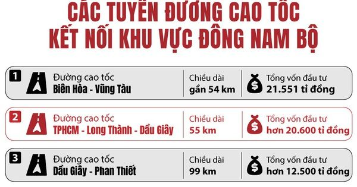
Mở trục phát triển mới phía Đông TP HCM 🔗 MOI
Sau nhiều năm chờ đợi, chiều 18-5, đường cao tốc Biên Hòa - Vũng Tàu chính thức thông xe toàn tuyến, mở ra kỳ vọng về một trục phát triển chiến lược phía Đông TP HCM. Tháo "nút thắt" cho vùng kinh tế
Cách để tránh chốt lời 'hụt' khi đầu tư chứng khoán 🔗 MOI
Tôi đầu tư chứng khoán cũng được vài năm nhưng bản thân tự nhận thấy một "tật" rất lớn, đó chính là hay chốt lời "hụt". Ví dụ trường hợp gần nhất là với cổ phiếu NVL. Tôi mua từ hồi 10.000 đồng, đến c
Bản tin 30s nóng: Clip cô gái trả gậy chỉ huy giao thông gây sốt; Đoàn tàu tông bay xe bồn tại Mỹ 🔗 MOI
Bản tin 30s nóng: Clip cô gái trả gậy chỉ huy giao thông gây sốt; Đoàn tàu tông bay xe bồn Bản tin 30s nóng 18-5: Clip cô gái trả gậy chỉ huy giao thông gây sốt; Đoàn tàu tông bay xe bô

Huy động nguồn lực cho tăng trưởng xanh 🔗 MOI
Pháp luật Bài viết phân tích tiềm năng, thực trạng và định hướng phát triển các mô hình du lịch biển tại Việt Nam nhằm hướng tới một nền kinh tế biển xanh, bền vững. Với đường bờ biển dài hơn 3.260 km
Ngành vận tải biển quý 1/2026: Hầu hết tăng trưởng, Vinaship lãi đột biến nhờ bán tàu 🔗 MOI
Quý 1/2026, nhiều doanh nghiệp vận tải biển ghi nhận tăng trưởng cả về doanh thu và lợi nhuận, đặc biệt Vinaship dù doanh thu giảm nhưng vẫn báo lãi đột biến nhờ khoản thu nhập từ thanh lý tàu.
Đại diện Vingroup nói về tuyển 20.000 lao động ở dự án lớn nhất VN, làm rõ bài toán “ly nông bất ly hương” 🔗 MOI
TIN MỚI Tập đoàn của tỷ phú Phạm Nhật Vượng sẽ tuyển nhiều lao động làm việc tại dự án Khu đô thị Thể thao Quốc tế Hà Nội, với tâm điểm là sân vận động Hùng Vương. Vừa qua, nhiều người dân quan tâm tớ
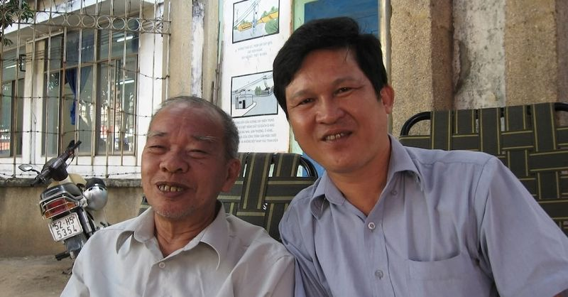
Điều chưa kể về nhà thơ Phạm Thiên Thư - tác giả tuyệt phẩm 'Ngày xưa Hoàng Thị' 🔗 MOI
Có lẽ, trong ký ức người yêu thơ đều “nằm lòng” những bài thơ nổi tiếng của nhà thơ Phạm Thiên Thư: Ngày xưa Hoàng Thị, Động Hoa Vàng… Giai điệu quyến rũ từ những vần thơ của Phạm Thiên Thư càng bay b
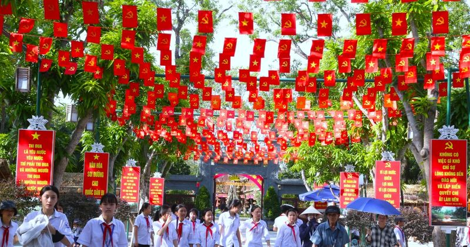
Quê Bác hôm nay 🔗 MOI
Xã nông thôn kiểu mẫu Một ngày giữa tháng Năm, trên tuyến đường nối quốc lộ 46 vào trung tâm xã Kim Liên (Nghệ An), dòng người và xe cộ nối nhau tìm về quê hương Chủ tịch Hồ Chí Minh. Sau cơn mưa đầu
Công an Hà Nội mời làm việc người phụ nữ chửi bới, đá tài xế ô tô sau va chạm trên đường 🔗 MOI
XEM CLIP: Liên quan đến vụ người phụ nữ xúc phạm, hành hung tài xế ô tô tại phố Nguyễn Xuân Linh, tối 18/5, trao đổi với PV VietNamNet, lãnh đạo công an phường Yên Hòa xác nhận vụ việc và cho biết ngư

Cảnh giác với hàng thẩm lậu 🔗 MOI
Thế nhưng, qua thực tế công tác phòng chống buôn lậu và gian lận thương mại khu vực biên giới tỉnh Tây Ninh, cần thẳng thắn thừa nhận nếu thông thoáng không đi kèm với năng lực giám sát tương xứng, sẽ
Kiến tạo mô hình tăng trưởng mới cho TP Đồng Nai 🔗 MOI
Tại TP Đồng Nai chiều 18-5, Tổng Bí thư, Chủ tịch nước Tô Lâm và Đoàn công tác của Trung ương đã làm việc với Ban Thường vụ Thành ủy Đồng Nai về tình hình triển khai Nghị quyết Đại hội Đại biểu toàn q
Điểm nóng xung đột ngày 19-5: Những “quân bài” đáng gờm trong tay Iran 🔗 MOI
Tổng thống Donald Trump liên tục tuyên bố Washington đã phá hủy toàn diện quân đội Iran, bao gồm năng lực tên lửa và hải quân, trong 6 tuần giao tranh trước khi hai bên đạt được lệnh ngừng bắn hôm 8-4
Lá phiếu 'phản bội' ông Trump khiến thượng nghị sĩ Cộng hòa thất cử 🔗 MOI
5 năm sau khi bỏ phiếu ủng hộ luận tội Tổng thống Donald Trump liên quan vụ bạo loạn tại Đồi Capitol năm 2021, thượng nghị sĩ Cộng hòa Bill Cassidy đang phải trả giá bằng thất bại lớn nhất sự nghiệp.
Khoảnh khắc lịch sử hạ thuỷ giàn khoan khổng lồ cao 145m, nặng 12.000 tấn, trị giá 180 triệu USD do chính kỹ sư người Việt đảm nhiệm 🔗 MOI
TIN MỚI Ngày 23/11/2012, giàn khoan tự nâng Tam Đảo 03 chính thức hạ thủy tại Vũng Tàu, nay thuộc TP HCM, đánh dấu thời khắc lịch sử của ngành cơ khí dầu khí Việt Nam. Lần đầu tiên một giàn khoan khổn
Hành trình rapper Nicki Minaj từ phản đối thành người hâm mộ ông Trump 🔗 MOI
Ở đầu dây bên kia, nữ rapper nói với ông Trump rằng cô ủng hộ ông giành chiến thắng trong cuộc bầu cử để đảm nhận nhiệm kỳ Tổng thống thứ hai, các nguồn thạo tin nói với WSJ. Cuộc gọi này khiến các qu

Bộ Tài chính đồng hành cùng doanh nghiệp nhỏ và vừa trên hành trình chuyển đổi kép 🔗 MOI
Chuyển đổi số Trong bối cảnh tiêu chuẩn ESG, yêu cầu Net Zero và sức ép cạnh tranh toàn cầu ngày càng gia tăng, phần lớn doanh nghiệp Việt Nam, đặc biệt là doanh nghiệp nhỏ và vừa đang đối mặt với kho

Xoắn dây tinh và thời gian vàng cấp cứu 🔗 MOI
Chuyên gia gợi ý chiến lược lướt sóng T+ với cổ phiếu nóng đang hút dòng tiền như VIC, VHM, STB 🔗 MOI
Từ đầu năm đến nay, VN-Index chịu tác động lớn từ diễn biến nhóm cổ phiếu Vingroup - Ảnh: HỮU HẠNH Chiến lược “70-30” Từ đầu năm đến nay, mặc dù VN-Index liên tục duy trì ở vùng điểm cao nhưng diễn bi

Tham vấn chính sách 🔗 MOI
18/05/2026 (Chinhphu.vn) - Bộ Tài chính đang dự thảo Nghị định quy định việc chào bán trái phiếu ra công chúng của doanh nghiệp dự án đầu tư theo phương thức... 18/05/2026 (Chinhphu.vn) - Bộ Giáo dục
Vững vàng theo chân Bác 🔗 MOI
Ngày 28/1/1941, lãnh tụ Nguyễn Ái Quốc trở về Pác Bó trực tiếp lãnh đạo phong trào cách mạng trong nước. Từ nơi đây, lãnh tụ Nguyễn Ái Quốc đã gây dựng căn cứ địa đầu tiên của cả nước, phát động cao t
Siết hoạt động cho người nước ngoài thuê xe máy 🔗 MOI
Đầu tháng 5-2026, trên đường Trần Phú, phường Nha Trang (tỉnh Khánh Hòa), một vụ tai nạn giao thông nghiêm trọng xảy ra. Người đàn ông tên S.K. (35 tuổi, quốc tịch Nga) điều khiển xe máy sau khi sử dụ
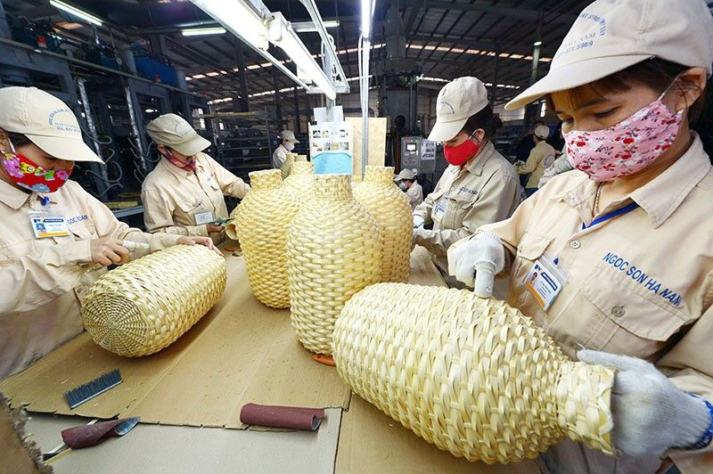
Mở lối tín dụng cho doanh nghiệp nhỏ và vừa 🔗 MOI
Bộ Tài chính đang xây dựng Luật Hỗ trợ doanh nghiệp nhỏ và vừa (sửa đổi) để thay thế luật năm 2017, dự kiến trình Quốc hội xem xét, thông qua tại Kỳ họp thứ 2 vào tháng 10-2026. Theo Bộ Tài chính, nội
Ngắm thác 9 tầng tại khu mộ thân mẫu Chủ tịch Hồ Chí Minh 🔗 MOI
Ảnh: Ban Quản lý cung cấp Khu mộ bà Hoàng Thị Loan - thân mẫu Chủ tịch Hồ Chí Minh nằm trên lưng chừng núi Động Tranh, thuộc dãy Đại Huệ, xã Kim Liên, tỉnh Nghệ An. Đây là địa chỉ văn hóa, tâm linh th
Loạt lãnh đạo doanh nghiệp lớn bị khởi tố từ đầu năm 2026 🔗 MOI
Chủ tịch Trịnh Văn Tuấn và dàn lãnh đạo Tập đoàn PC1 bị khởi tố Tối 16/5, CTCP Tập đoàn PC1 công bố thông tin bất thường liên quan tới việc cơ quan Cảnh sát điều tra Bộ Công an khởi tố, bắt tạm giam n
Vì sao người dân nên dùng app SOS An ninh trật tự - CATP HCM? 🔗 MOI
Ngày 18.5, Công an TP.HCM cho biết người dân cần cài đặt và sử dụng ứng dụng SOS An ninh trật tự - CATP HCM. Đây được xem là bước đột phá trong việc ứng dụng công nghệ số vào phong trào "Toàn dân bảo
Pháo hoa sáng rực dịp Đồng Nai lên thành phố 🔗 MOI
Đúng 22h, quảng trường Long Hưng trên đại lộ Nguyễn Hữu Cảnh, phường Long Hưng, rực sáng với màn pháo hoa ba tầng kéo dài 15 phút, trong đêm công bố Đồng Nai lên thành phố trực thuộc Trung ương và đón
“Super Mario”của châu Âu 🔗 MOI
Cựu Chủ tịch Mario Draghi đã được trao giải thưởng quốc tế Charlemagne tại lễ trao giải diễn ra ngày 14/5 ở thành phố Aachen, miền tây nước Đức. Phát biểu ý kiến tại buổi lễ, Thủ tướng Đức Friedrich M
Điểm sáng hiếm hoi 🔗 MOI
Đây là vòng đàm phán thứ ba giữa Israel và Lebanon dưới vai trò trung gian hòa giải của Mỹ. Tuy nhiên, vòng đàm phán trực tiếp lần này đã không đáp ứng được kỳ vọng của giới quan sát. Những nút thắt n
Cuộc đời người sáng lập tập đoàn Huyndai qua sách 🔗 MOI
* Bài cảm nhận cho chuyên mục ''Cuốn sách tôi yêu'' Có lẽ bạn chưa hoặc đã biết về Huyndai (Hiện đại) - một trong những tập đoàn hàng đầu của Hàn Quốc. Khởi đầu là một công xưởng chuyên sửa chữa ôtô r

quản lý ngân sách hiệu quả, phục vụ chính quyền địa phương 2 cấp 🔗 MOI
Tài chính Không chỉ tinh gọn, sắp xếp bộ máy và kịp thời tham mưu, ban hành, triển khai các văn bản hướng dẫn về kế toán phục vụ mô hình chính quyền địa phương 2 cấp, tham gia các đoàn công tác cùng B

Hiểu đúng thí điểm vùng phát thải thấp từ 1-7: Không cấm hết xe máy xăng như lời đồn 🔗 MOI
Chi tiết khu vực dự kiến thí điểm vùng phát thải thấp tại Hà Nội từ ngày 1-7-2026 - Ảnh: VTV Từ ngày 1-7, Hà Nội bắt đầu triển khai thí điểm vùng phát thải thấp (Low Emission Zone - LEZ) tại 9 phường
Mang máy in tiền giả 'đi đâu in đó', vừa ra tù đã tái phạm 🔗 MOI
Cao Đình Lâm bị bắt giữ sau khi kiểm tra phát hiện tiền giả và máy in tiền giả - Ảnh: VĂN TÁNH Ngày 18-5, Đồn Biên phòng Sa Huỳnh (Bộ đội biên phòng Quảng Ngãi) cho biết vừa phối hợp Công an phường Sa
TP.HCM mở đợt cao điểm truy quét hàng giả, xâm phạm sở hữu trí tuệ 🔗 MOI
TP.HCM mở cao điểm xử lý xâm phạm quyền sở hữu trí tuệ, không có vùng cấm - Ảnh: Tư liệu cắt từ clip Chủ tịch UBND TP.HCM chỉ đạo các cơ quan, đơn vị, địa phương khẩn trương tổ chức đợt cao điểm kiểm
Tạm giữ một số người trong vụ hỗn chiến trên phố Huế khiến một cô gái ngã gục trên vỉa hè 🔗 MOI
Hai nhóm nam nữ ẩu đả tại phố Huế, Hà Nội - Ảnh cắt từ clip Tối 18-5, Công an TP Hà Nội cho biết liên quan vụ việc có dấu hiệu gây rối trật tự công cộng xảy ra tại số 193 phố Huế (phường Hai Bà Trưng,
Phá đường dây làm giả giấy tờ xuyên quốc gia, thu gần 10.000 tài liệu giả 🔗 MOI
Công an tỉnh Lai Châu bắt giữ các đối tượng trong vụ án làm giả con dấu, các loại giấy tờ giả - Ảnh: TTXVN phát Chiều 18-5, Công an tỉnh Lai Châu họp báo thông tin về chuyên án "làm giả con dấu, tài l
Arsenal chỉ còn cách ngôi vô địch 1 trận thắng 🔗 MOI
Havertz (số 29) ghi bàn thắng duy nhất cho Arsenal - Ảnh: REUTERS Burnley là 1 trong 2 đội bóng rớt hạng sớm mùa giải năm nay, và hoàn toàn không còn động cơ thi đấu hiện tại. Dù vậy, HLV Mikel Arteta
Xe đổ nhớt ra đường cả cây số, nhiều người té ngã, công nhân trắng đêm xử lý 🔗 MOI
Nhớt đổ thấm cả vào mặt đường, gây trơn trượt, một số người đi xe máy bị té ngã - Ảnh: TRẦN MAI Tối 18-5, nhớt đổ tràn ra mặt đường Nguyễn Tự Tân và Lê Hữu Trác (phường Nghĩa Lộ, tỉnh Quảng Ngãi) kéo
22 kỳ thủ giành vé Esport World Cup, làng cờ thế giới 'chào nhà vô địch Lê Quang Liêm trở lại' 🔗 MOI
Lê Quang Liêm (trái) trong trận thắng Đinh Lập Nhân (Trung Quốc) - Ảnh: Flick "Chỉ 22 kỳ thủ giành vé đến Esport World Cup, và Lê Quang Liêm là người thứ 8, hãy cùng chào đón sự trở lại của nhà vô địc
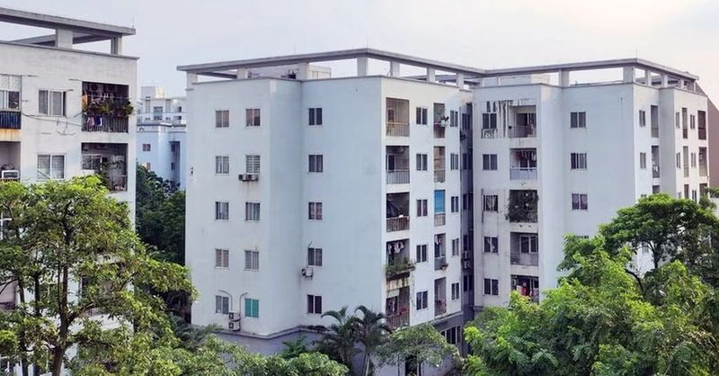
Bộ Xây dựng đề xuất cấp 10.000 tỉ đồng vốn điều lệ cho Quỹ nhà ở Trung ương 🔗 MOI
Một dự án nhà ở xã hội tại phường Việt Hưng, TP Hà Nội đã được đưa vào sử dụng - Ảnh: Vietnam+ Bộ Xây dựng vừa có báo cáo Văn phòng Trung ương Đảng về phát triển nhà ở xã hội , triển khai thành lập, đ
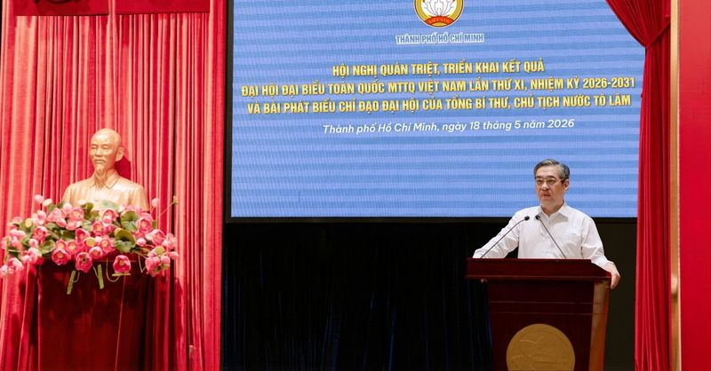
Phó bí thư Nguyễn Phước Lộc: Hướng đến xây dựng 'mặt trận số', chăm lo người dân bền vững, lâu dài 🔗 MOI
Toàn cảnh Hội nghị quán triệt, triển khai kết quả Đại hội đại biểu toàn quốc Mặt trận Tổ quốc Việt Nam TP.HCM lần thứ XI, nhiệm kỳ 2026 - 2031 và bài phát biểu chỉ đạo đại hội của Tổng Bí thư, Chủ tịc
Lập đoàn đàm phán Chính phủ, Bộ trưởng Công Thương làm trưởng đoàn 🔗 MOI
Bộ trưởng Công Thương Lê Mạnh Hùng sẽ đảm nhiệm làm Trưởng Đoàn đàm phán Chính phủ về kinh tế và thương mại quốc tế - Ảnh: C.DŨNG Đoàn đàm phán Chính phủ có chức năng giúp Thủ tướng Chính phủ chỉ đạo

Đổi mới công tác xây dựng và thi hành pháp luật: Dấu ấn 1 năm thực hiện Nghị quyết số 66-NQ/TW 🔗 MOI
Tài chính Trong tiến trình phát triển đất nước, cải cách thể chế luôn được xác định là khâu đột phá để khơi thông nguồn lực và nâng cao năng lực cạnh tranh quốc gia. Trên nền tảng những chuyển động mạ
Iran lên tiếng về cơ chế thu phí qua Eo biển Hormuz 🔗 MOI
Phát ngôn viên Bộ Ngoại giao Iran Esmaeil Baqaei cho rằng cơ chế thu phí dịch vụ qua Eo biển Hormuz có cơ sở pháp lý và hoàn toàn hợp lý. Trong buổi họp báo thường kỳ ngày 18/5, khi bình luận về thông
Chân dung doanh nghiệp 🔗 MOI
Becamex ghi nhận doanh thu 1.106 tỷ đồng trong quý 1, giảm 40% so với cùng kỳ, lợi nhuận sau thuế còn 288 tỷ đồng – mức thấp nhất kể từ đầu năm 2024.

Khu Công nghiệp, Khu Kinh tế 🔗 MOI
Theo yêu cầu của Thủ tướng, lãnh đạo Bộ, ngành, địa phương phải chỉ đạo hoàn thành việc xử lý các cơ sở nhà, đất dôi dư sau sáp nhập trước ngày 25/5, không để tình trạng hư hỏng, xuống cấp, lãng phí.

Chỉ đạo, quyết định của Chính phủ - Thủ tướng Chính phủ 🔗 MOI
18/05/2026 (Chinhphu.vn) - Phó Thủ tướng Phạm Thị Thanh Trà vừa ký văn bản số 527/TTg-CĐS ngày 18/5/2026 của Thủ tướng Chính phủ về việc cắt giảm, đơn giản hóa... 18/05/2026 (Chinhphu.vn) - Chính phủ
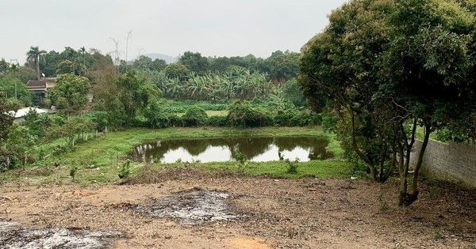
Cách xác định đất vườn, ao gắn liền đất ở 🔗 MOI
Bà Hương được bố mẹ tặng cho đất ao từ trước năm 2014. Bà hỏi, trong trường hợp này, thửa đất của bà có được xác định là đất vườn, ao gắn liền với đất ở được tách trước năm 2014 hay không? Bộ Nông ngh
PGS-TS Lương Minh Cừ, vị ‘thuyền trưởng’ đa tài 🔗 MOI
Những đóng góp của thầy thể hiện rõ nét qua từng bước phát triển của Trường ĐH Cửu Long trong khoảng thời gian thầy về công tác tại trường, cũng như qua các tác phẩm văn học mang đậm hơi thở thời đại.
[Video] Hàn Quốc công bố Sách trắng mới, ưu tiên hòa bình liên Triều 🔗 MOI
Chính quyền Tổng thống Lee Jae Myung khẳng định tôn trọng hệ thống của Triều Tiên và không theo đuổi thống nhất bằng sáp nhập. Các biện pháp giảm căng thẳng được đề xuất, trong bối cảnh quan hệ liên T
Thời tiết ngày 19/5: Bắc Bộ và Trung Bộ mưa dông diện rộng, nhiều nơi mưa to đến rất to 🔗 MOI
Theo Trung tâm Dự báo khí tượng thủy văn quốc gia, ngày 19/5, Đông Bắc Bộ, Thanh Hóa và Nghệ An duy trì hình thái thời tiết có mưa, mưa vừa và rải rác dông với lượng mưa dao động 20-40mm, cục bộ mưa r
🔗 MOI
Không khí tại Khu di tích Quốc gia đặc biệt Pác Bó những ngày tháng 5/2026 ghi nhận dòng người liên tục di chuyển về các điểm di tích. Giữa không gian núi Các Mác và dòng suối Lê-nin, giọng của thuyết
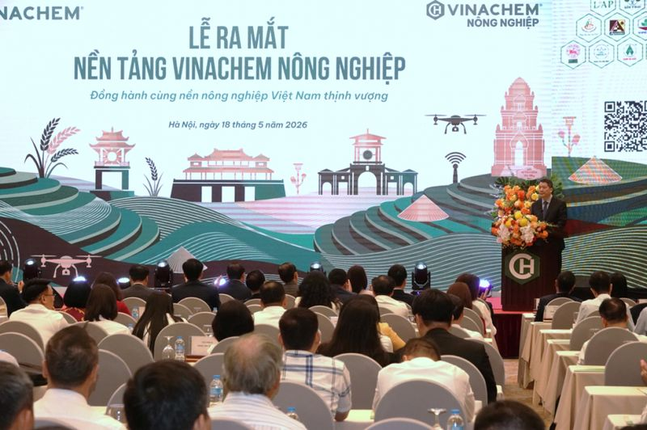
Dấu ấn VinachemMart và bước đột phá chuyển đổi số của ngành hóa chất 🔗 MOI
Chiều ngày 18/5/2026, Tập đoàn Hóa chất Việt Nam (Vinachem) tổ chức Hội nghị sơ kết 1 năm hoạt động Sàn thương mại điện tử VinachemMart và ra mắt nền tảng Vinachem Nông nghiệp. Thứ trưởng Bộ Tài chính
Nóng cuộc đua quán quân bóng chuyền nữ 🔗 MOI
Sau 4 ngày tranh tài sôi nổi tại Nhà Thi đấu TDTT Tây Ninh, cục diện Giải Bóng chuyền nữ quốc tế VTV9 - Bình Điền 2026 dần trở nên rõ nét với việc các ứng viên nặng ký đều giành quyền đi tiếp với mục
Bí ẩn ngôi làng mưa nhiều nhất thế giới: Cả năm không khô nổi một ngày 🔗 MOI
TIN MỚI Trên thế giới có những nơi mà chỉ cần nghe tên đã đủ khiến người ta tò mò, nơi cuộc sống không giống bất kỳ đâu và thiên nhiên luôn đặt ra những thử thách đặc biệt. Ẩn mình giữa những điều kiệ
Pep Guardiola chia tay Man City, Enzo Maresca được chọn kế nhiệm 🔗 MOI
Tương lai của Pep Guardiola tại Man City đang trở thành tâm điểm chú ý của bóng đá Anh khi nhiều nguồn tin cho rằng nhà cầm quân người Tây Ban Nha có thể chia tay sân Etihad sớm hơn dự kiến, khép lại
20 năm tù cho bảo mẫu ném bé 13 tháng tuổi tử vong 🔗 MOI
Ngày 18/5, Tòa án nhân dân tỉnh Quảng Ngãi đã mở phiên tòa xét xử sơ thẩm, tuyên án 20 năm tù đối với bảo mẫu Nguyễn Thị Quyên (41 tuổi, trú phường Cẩm Thành, tỉnh Quảng Ngãi) về tội giết người theo q
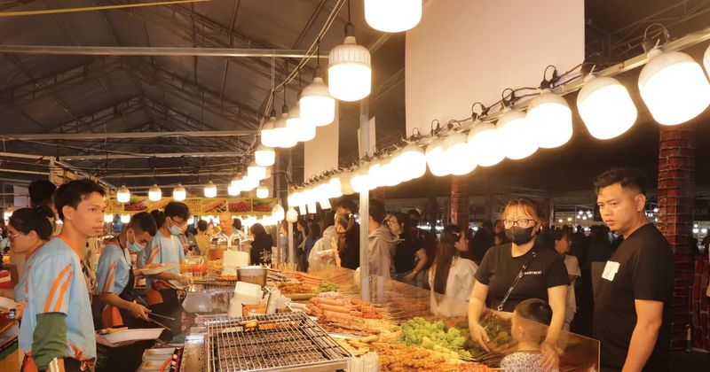
Vũng Tàu đón du khách bằng diện mạo mới 🔗 MOI
Bức tranh đầy sức sống Những ngày đầu hè, dọc tuyến Bãi Sau, dòng người đổ về đông nghịt từ sáng sớm. Tiếng sóng biển hòa cùng không khí nhộn nhịp của các quán cà phê, nhà hàng và khu vui chơi tạo nên
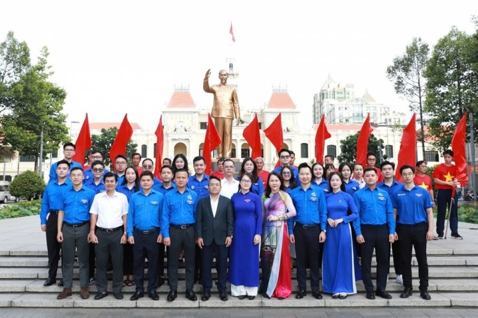
Tuổi trẻ ngành Tài chính vững bước noi theo tư tưởng, đạo đức, phong cách Hồ Chí Minh 🔗 MOI
Trong những ngày tháng 5 lịch sử, khi triệu trái tim Việt Nam thành kính hướng về kỷ niệm 136 năm Ngày sinh Chủ tịch Hồ Chí Minh kính yêu, tuổi trẻ ngành Tài chính đã triển khai nhiều hoạt động thiết
Mười năm đi tìm 'món quà' Bác tặng 🔗 MOI
Món quà Bác tặng Ở tuổi xưa nay hiếm, nhà giáo ưu tú Hoàng Nguyên, nguyên Phó Hiệu trưởng Trường cấp 2 Nam Liên (nay là Trường THCS Kim Liên, xã Kim Liên, Nghệ An) vẫn còn khá minh mẫn. Căn nhà nhỏ củ
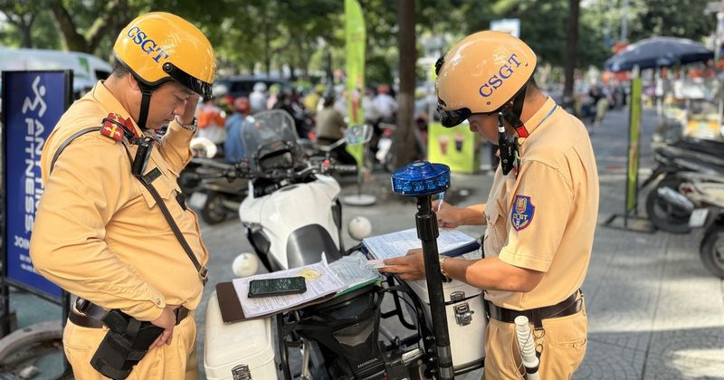
Nhiều người mắc lỗi đi ngược chiều ở trung tâm TP.HCM mà không biết 🔗 MOI
Trong dòng xe đông đúc trên đường Trần Hưng Đạo (đoạn từ đường Calmette đến Nguyễn Văn Cừ), phần đường nhỏ nằm sát vỉa hè khiến nhiều người đi xe máy vô tình đi ngược chiều vì tưởng đây là đường phụ đ
3 con giáp gặp may tuần này: Tuổi Sửu công việc suôn sẻ, tuổi Dần gặp quý nhân 🔗 MOI
Tuổi Sửu Tuổi Sửu là con giáp có tài vận sáng nhất tuần 18/5 - 24/5. Điều đáng nói là vận may của bạn không đến kiểu “trúng lớn” bất ngờ mà đến từ những việc rất thực tế như được trả tiền đúng hạn, có
Miền Bắc đón mưa lớn diện rộng từ đêm nay 🔗 MOI
Theo Trung tâm Dự báo Khí tượng Thủy văn Quốc gia, hoạt động mạnh của vùng hội tụ gió kết hợp với rãnh áp thấp sẽ gây ra một đợt mưa lớn diện rộng từ đêm nay đến đêm mai (19/5) ở miền Bắc, Thanh Hóa v
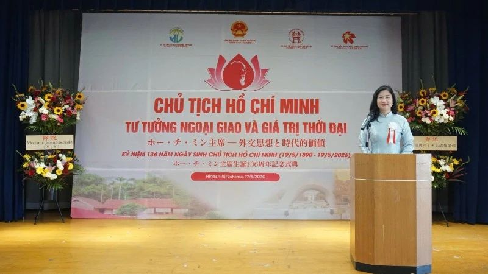
Giá trị thời đại của tư tưởng Hồ Chí Minh 🔗 MOI
Chương trình gồm các hoạt động: triển lãm tranh, chiếu phim tư liệu về sự nghiệp ngoại giao của Chủ tịch Hồ Chí Minh và tọa đàm về tư tưởng ngoại giao, tấm gương đạo đức Hồ Chí Minh. Phát biểu khai mạ
Xả súng tại Trung tâm Hồi giáo ở California, 3 người thiệt mạng, 2 nghi phạm thiếu niên tự sát 🔗 MOI
(PLO)- Xảy ra vụ xả súng tại Trung tâm Hồi giáo San Diego ở bang California (Mỹ), khiến 3 người thiệt mạng, 2 nghi phạm thiếu niên được cho là đã tự sát. Ngày 18-5, xảy ra xả súng tại Trung tâm Hồi gi
Người phụ nữ Dao đỏ khiến cư dân mạng mê mẩn vẻ đẹp vùng cao 🔗 MOI
Chị Mẩy Kim tên thật là Lý Tả Mẩy (29 tuổi), hiện sống và làm việc tại thôn Sả Xéng, xã Tả Phìn (Lào Cai). Thời gian qua, chị được nhiều người yêu mến qua những clip giới thiệu cuộc sống thường ngày c
Định hướng quan trọng nhằm tăng chất lượng nguồn nhân lực 🔗 MOI
Định hướng này tiếp tục được cụ thể hóa qua Quyết định 2371/QĐ-TTg ngày 27/10/2025 của Thủ tướng Chính phủ phê duyệt Đề án “Đưa tiếng Anh thành ngôn ngữ thứ hai trong trường học giai đoạn 2025- 2035,
Arsenal thắng Burnley tại Emirates, chạm tay ngôi vô địch Ngoại hạng 🔗 MOI
Arsenal tiến thêm một bước quan trọng trên hành trình chinh phục ngôi vương Premier League sau 22 năm chờ đợi sau khi đánh bại Burnley 1-0 trên sân Emirates rạng sáng 19-5. Ba điểm quý giá giúp thầy t
Khai mạc Lễ hội Làng Sen năm 2026 tại quê hương Chủ tịch Hồ Chí Minh 🔗 MOI
Lễ hội Làng Sen năm 2026 có những hoạt động gì? 18/05/2026 05:54?
10 năm chữa lành, chuyên gia tâm lý phải đi trị liệu 🔗 MOI
Làm việc tại một trung tâm hỗ trợ bạo lực gia đình, Lan, 36 tuổi, từng đồng hành với nhiều phụ nữ và trẻ em vượt qua sang chấn. Mười giờ mỗi ngày, chuyên gia ngồi lắng nghe những điều không thể nói vớ
Loại trà số một giúp giảm mỡ máu 🔗 MOI
Triglyceride là một loại chất béo trong máu có liên quan mật thiết đến sức khỏe tim mạch. Khi chỉ số này tăng cao, nguy cơ mắc các bệnh tim mạch hay đột quỵ cũng tăng theo. Theo các chuyên gia dinh dư
Chùa trong hẻm ở TP.HCM: Giữ truyền thống Khmer Nam bộ hơn nửa thế kỷ 🔗 MOI
Theo sư Lây - thư ký của chùa Pothiwong , chùa còn có tên khác là Boddhivansa. Chùa hiện nằm trong hẻm 21/2 đường Bùi Thế Mỹ, phường Bảy Hiền, TP.HCM . Trước kia, chùa được hòa thượng Thạch Âm thành l
CÔNG ĐOÀN SÁT CÁNH VỚI NGƯỜI LAO ĐỘNG (*): Chuyển từ quản lý sang phục vụ 🔗 MOI
Trong bối cảnh hiện nay, Công đoàn TP HCM xác định chuyển đổi số là bước đi quan trọng, là "chìa khóa" nâng cao hiệu quả hoạt động. Không chỉ được đẩy mạnh trong Tháng Công nhân (CN), đây còn là 1 tro
CHÍNH QUYỀN SỐ CHẠM VÀO LÒNG DÂN (*): Cán bộ hóa "chiến thần livestream" 🔗 MOI
Khi livestream bán sản phẩm, các cán bộ nhà nước không chỉ giúp người dân bán được hàng mà còn gửi đi một thông điệp rõ ràng: sự đồng hành không còn là khẩu hiệu Nếu trước đây, hình ảnh cán bộ gắn với
[Video] Gần 100 nhà hoạt động nhân đạo bị Israel bắt giữ trên biển 🔗 MOI
Israel cho biết đã bắt giữ khoảng 100 nhà hoạt động và đưa về cảng Ashdod sau khi khống chế các tàu trong hạm đội Global Sumud. Phía hạm đội khẳng định đây là nhiệm vụ nhân đạo phi bạo lực, trong khi
Tin tức đặc biệt trên báo in Thanh Niên 19.5.2026 🔗 MOI
Thành lập TP.Đồng Nai là dấu mốc lớn, mở ra chặng đường mới Tổng Bí thư, Chủ tịch nước Tô Lâm trao Nghị quyết của Quốc hội về thành lập TP.Đồng Nai cho Bí thư Thành ủy Đồng Nai Vũ Hồng Văn Ảnh: TTXVN
Cùng cất cánh trên đường băng mới 🔗 MOI
Sự phát triển mang tính cộng sinh (không phải cạnh tranh) chiến lược giữa Đồng Nai - TPHCM trong giai đoạn mới càng cần tính tương xứng về thể chế, sự phân vai hợp lý trong chuỗi liên kết vùng trọng đ
Các địa phương rà soát khu vực có nguy cơ xảy ra lũ quét, sạt lở đất 🔗 MOI
Trước đó, từ ngày 16 đến 17-5, mưa lớn cục bộ đã xảy ra ở một số địa phương, khu vực trên phạm vi cả nước. Cơ quan khí tượng - thủy văn cảnh báo đợt mưa dông này có khả năng kéo dài đến ngày 21-5. Cùn
Mất con, người đàn ông ở TPHCM làm thiện nguyện để 'bình an trong tâm hồn' 🔗 MOI
Từng là trẻ bụi đời Sáng sớm, trên chiếc xe máy cũ, ông Phạm Văn Tùng (67 tuổi, phường Vườn Lài, TPHCM) tới con hẻm 525 đường Tô Hiến Thành (phường Diên Hồng) để hỗ trợ hoạt động thiện nguyện “Cơm 1.0
Muốn vươn lên, Việt Nam phải tái định nghĩa đại học 🔗 MOI
Đây không còn là câu chuyện giáo dục, mà là bài toán tương lai quốc gia. Vì thế nếu chỉ hiểu phát biểu của Tổng Bí thư, Chủ tịch nước là yêu cầu nâng cấp một vài đại học hay cải thiện chất lượng đào t
Neymar được triệu tập dự World Cup 2026 🔗 MOI
Các phóng viên mà người hâm mộ vui mừng khi Neymar xuất hiện trên màn hình lớn trong buổi công bố đội hình tuyển Brazil dự World Cup 2026 tại Museum of Tomorrow ở Rio de Janeiro ngày 18/5. Ảnh: Globo
Đại học Quốc gia Hà Nội và kỳ vọng trở thành 'túi khôn' 🔗 MOI
Đại học đổi mới sáng tạo - xu thế của kinh tế tri thức Phát biểu tại Lễ kỷ niệm 120 năm Ngày truyền thống ĐH Quốc gia Hà Nội, Tổng Bí thư, Chủ tịch nước Tô Lâm đưa ra thông điệp: ĐH Quốc gia Hà Nội ph
Học Bác qua những điều giản dị (*): Lan tỏa phẩm chất quý 🔗 MOI
Tại Công ty TNHH Việt Nam Samho, xã Bình Mỹ, TP HCM, việc học tập và làm theo tư tưởng, đạo đức phong cách Hồ Chí Minh luôn được Công đoàn cơ sở xác định trọng tâm, xuyên suốt. Bài học tiết kiệm và ch
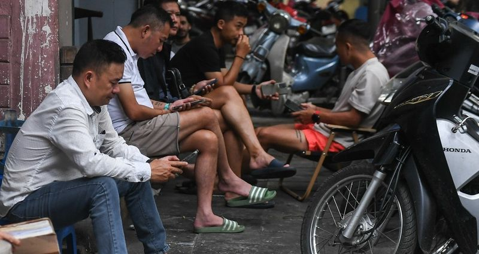
Hà Nội đứng trước bài toán khó khi tính cho thuê vỉa hè 🔗 MOI
Phải có tiêu chí cụ thể cho từng tuyến phố Trao đổi với VietNamNet, ông Nguyễn Văn Quyền, nguyên Phó tổng cục trưởng Tổng cục Đường bộ Việt Nam cho rằng, việc Hà Nội tính cho thuê vỉa hè nên được nghi
Diện mạo cầu Kỳ Lộ lớn nhất cao tốc Bắc - Nam 🔗 MOI
Cầu Kỳ Lộ bắc qua sông cùng tên thuộc xã Tuy An Bắc (tỉnh Phú Yên cũ) quy mô lớn và dài nhất, có yêu cầu kỹ thuật phức tạp nhất trong 12 dự án thành phần cao tốc Bắc - Nam phía Đông, được đưa vào khai
Hôm nay 19.5 là ngày gì?: Kỷ niệm 136 năm ngày sinh Chủ tịch Hồ Chí Minh 🔗 MOI
Dương lịch hôm nay là thứ ba, đánh dấu năm 2026 trải qua ngày thứ 138. Theo lịch âm hôm nay 19.5 là ngày 3 tháng 4, theo cách gọi can chi là ngày Quý Tỵ, tháng Quý Tỵ, năm Bính Ngọ. Theo lịch vạn niên
Đội tuyển Việt Nam thiếu nhân tố U.23: Măng đã mọc, nhưng tre chưa già! 🔗 MOI
Đội tuyển Việt Nam chưa thể trẻ hóa Thành công của U.23 Việt Nam với 15 trận thắng liên tục, ngôi vương Đông Nam Á cùng tấm HCĐ U.23 châu Á dưới thời HLV Kim Sang-sik đã củng cố niềm tin, rằng đội tuy
Thắng Burnley, Arsenal tiến sát ngôi vương Ngoại hạng Anh 🔗 MOI
Arsenal nhập cuộc với sự quyết tâm cao Dù đã xuống hạng nhưng Burnley cũng chơi rất "nhiệt" VAR vào cuộc ở tình huống Saka ngã trong vòng cấm đội khách. Tuy nhiên, không có penalty cho Pháo thủ Bước n

Chính phủ với công dân 🔗 MOI
19/05/2026 (Chinhphu.vn) - Bố của bà Vũ Thị Hương (Hải Phòng) được cấp một Giấy chứng nhận quyền sử dụng chung cho một thửa đất ở và một thửa đất ao giáp nhau. 18/05/2026 (Chinhphu.vn) - Thời điểm xác
Công nghệ có thể mở ra phương thức sinh tồn mới cho truyện dân gian 🔗 MOI
Xung quanh câu chuyện làm mới chất liệu dân gian bằng công nghệ hiện đại, phóng viên Báo Nhân Dân đã có cuộc trao đổi với PGS, TS Nguyễn Việt Hùng - Phó Trưởng bộ môn Văn học Việt Nam 1, Đại học Sư ph
[Ảnh] 25 năm Lễ Thượng cờ trên Quảng trường Ba Đình 🔗 MOI
Giữa không gian thiêng liêng của Quảng trường Ba Đình , đúng 6 giờ 30 phút, tiếng Quốc thiều vang lên cùng lá cờ đỏ sao vàng tung bay trước Lăng Chủ tịch Hồ Chí Minh đã trở thành hình ảnh thiêng liêng
WHO thúc đẩy các ưu tiên chiến lược 🔗 MOI
Kỳ họp thứ 79 của Đại hội đồng Y tế thế giới (WHA79) diễn ra tại TP Geneva - Thụy Sĩ từ ngày 18 đến 23-5, quy tụ phái đoàn từ những quốc gia thành viên của Tổ chức Y tế thế giới (WHO) nhằm thảo luận,
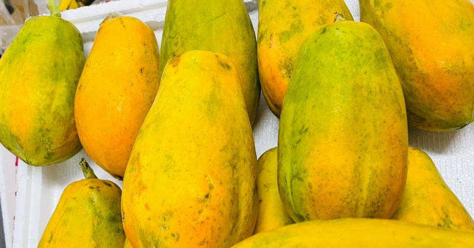
5 nhóm người cần ăn nhiều đu đủ 🔗 MOI
Gia đình tôi thường lựa chọn các loại trái cây theo mùa như đu đủ, chuối để bổ sung dinh dưỡng hằng ngày. Xin chuyên gia cho biết, ăn đu đủ mỗi ngày có thực sự tốt cho sức khỏe hay không? Những đối tư
Khẩn trương tháo gỡ các 'điểm nghẽn' liên quan tài chính cho KH-CN 🔗 MOI
"Chìa khóa vàng" để phát triển đất nước Theo Thủ tướng Lê Minh Hưng , thời gian qua, KH-CN đã đạt được một số thành tựu, song chưa thực sự trở thành động lực đột phá cho phát triển KT-XH. Trong thời đ
Loạt căn hộ ở Hà Nội giảm giá 500-700 triệu đồng/căn 🔗 MOI
Nhiều căn giảm vài trăm triệu đồng Theo báo cáo về nhà ở và thị trường bất động sản quý I/2026 của Bộ Xây dựng, giá căn hộ chung cư mở bán mới tiếp tục duy trì đà tăng ở mức cao. Nguyên nhân chủ yếu d
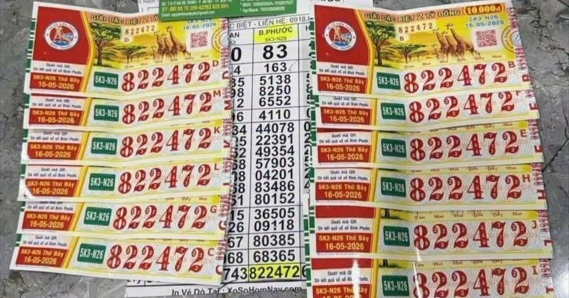
Mua giúp người bán dạo, người đàn ông ở Vĩnh Long trúng 24 tỉ xổ số miền Nam 🔗 MOI
Đại lý vé số Khắc Duy ở Vĩnh Long cho biết đã đổi thưởng cho khách có 12 tờ vé số trúng độc đắc. Cụ thể, 12 tờ có dãy số 822472 thuộc đài Bình Phước mở thưởng xổ số miền Nam ngày 16 tháng 5 trúng độc
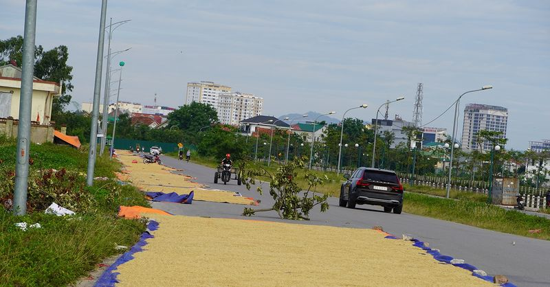
Cảnh tượng gây 'nhức mắt' trên đường, tài xế ô tô thấp thỏm lo va chạm 🔗 MOI
Giữa tháng 5, nhiều địa phương ở Nghệ An bước vào cao điểm thu hoạch lúa vụ Đông Xuân. Dọc nhiều tuyến đường, ngõ xóm, hình ảnh người dân tận dụng lòng, lề đường để phơi lúa, ngô, lạc hay rơm rạ xuất
VNG lên kế hoạch năm nay hết lỗ 🔗 MOI
Trong tài liệu trình phiên họp cổ đông thường niên đầu tháng sau, ban lãnh đạo Tập đoàn VNG dự tính doanh thu cả năm dao động 12.500-13.500 tỷ đồng, còn lãi trước thuế 300-450 tỷ đồng. Đây là lần đầu

Bản quyền chiếm chỗ trước 🔗 MOI
Phần mềm không có khả năng phân biệt đúng, sai theo cách con người hiểu. Nó chỉ đối chiếu dữ liệu được đăng ký trước. Không ít tác giả thật lại trở thành người bị cảnh báo vi phạm chỉ vì đến sau.
Giải mật hồ sơ về UFO 🔗 MOI
Chúng đã giúp công chúng Mỹ và thế giới lần đầu trong lịch sử tiến gần hơn đến với thắc mắc lớn nhất về sự tồn tại của người ngoài hành tinh. Không có kết luận rõ ràng Theo CNN , việc công bố này diễn
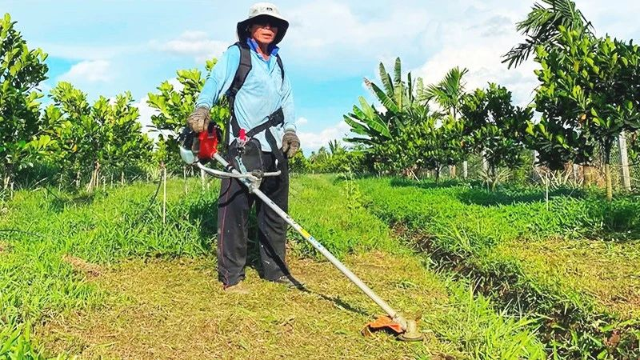
Những ngã ba đời 🔗 MOI
Sau mới biết, câu đó giống lời dặn dò con trai của một vị đại sứ có nhiều đóng góp cho nền ngoại giao nước nhà từ thuở còn gian khó. Và có vẻ, câu ấy cũng đã vận vào anh, một kẻ lang bạt kỳ hồ, được c
Cô gái hóa trang hình tượng Bác Hồ 🔗 MOI
Hường sinh năm 1982, quê cô ở phường Ninh Xá, tỉnh Bắc Ninh (thị xã Thuận Thành cũ). Người mơ mộng, cô bé Phạm Thị Hường mê vẽ từ nhỏ, cho đến khi đỗ vào Khoa Thiết kế mỹ thuật, chuyên ngành Thiết kế
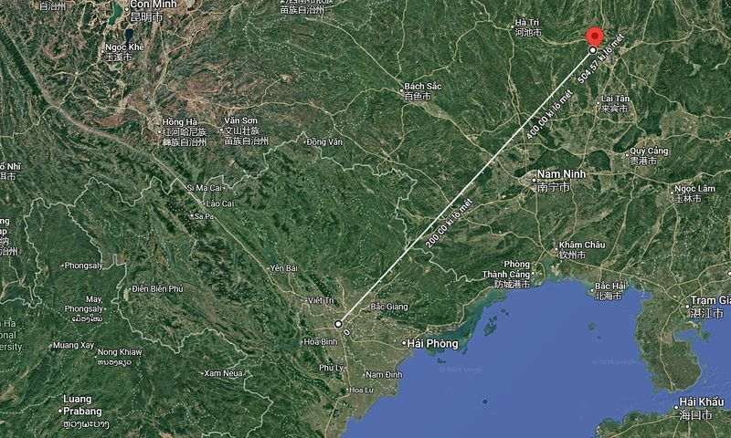
Động đất ở Quảng Tây, Hà Nội rung lắc 🔗 MOI
Trung tâm Báo tin động đất và Cảnh báo sóng thần (Viện Các khoa học Trái đất) cho biết trận động đất lúc 20h44 mạnh 5,2 độ, độ sâu chấn tiêu khoảng 10 km xảy ra tại thành phố Liễu Châu, tỉnh Quảng Tây
4 mẹo giúp thưởng thức cà phê không lo mất ngủ 🔗 MOI
Theo chuyên gia dinh dưỡng Caitlin Beale (Mỹ), tốc độ chuyển hóa caffeine phụ thuộc rất lớn vào cơ địa và gene của mỗi người. Nghiên cứu cho thấy caffeine có thể tồn tại trong cơ thể từ 2 đến 10 giờ.
Đế chế tỷ USD của Mayweather chao đảo 🔗 MOI
Hơn một thập kỷ, Mayweather được xem là biểu tượng của sự giàu có trong thể thao chuyên nghiệp. Không chỉ là võ sĩ quyền Anh vĩ đại bậc nhất lịch sử, anh còn xây dựng hình ảnh "Money Mayweather" như c
Bị 'bóc phốt' sai trên mạng, chủ quán có quyền kiện thực khách? 🔗 MOI
Quán cơm của vợ chồng anh Thắng nằm cạnh khu danh thắng, khách du lịch đông quanh năm, đặc biệt mùa lễ hội. Anh bán cả đồ bình dân và các món đặc sản địa phương, phục vụ đa dạng cả khách phổ thông và
AI phát hiện sớm, kiểm soát tăng huyết áp 🔗 MOI
Tại sự kiện ra mắt ứng dụng hôm 17/5, ông Lê Quang Dũng, Chủ tịch HĐQT kiêm Tổng giám đốc OSP Group, khẳng định AI không thay thế bác sĩ chẩn đoán hay kê đơn. Thay vào đó, trợ lý ảo hỗ trợ người dùng

Công cụ AI liên quan Anthropic tự ý xóa sạch dữ liệu của một doanh nghiệp trong 9 giây 🔗 MOI
Hành động phá hoại của công cụ lập trình AI đã khiến khách hàng của Công ty PocketOS rơi vào tình thế khó khăn - Ảnh TED HSU Báo Guardian đưa tin một công cụ lập trình vận hành bằng trí tuệ nhân tạo (
10 mẹo hữu ích trên iPhone 🔗 MOI
Hướng dẫn của trang công nghệ MacRumors áp dụng cho thiết bị đã cập nhật lên phiên bản hệ điều hành iOS 26 trở lên. Biến ứng dụng thành Widget nhanh Thay vì phải vào menu tùy chỉnh phức tạp, người dùn
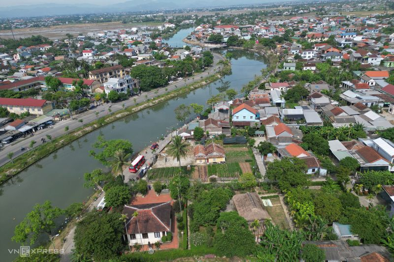
Ngôi làng lưu dấu tuổi thơ Chủ tịch Hồ Chí Minh ở Huế 🔗 MOI
Làng Dương Nỗ bên sông Phổ Lợi, thuộc phường Dương Nỗ, là nơi Chủ tịch Hồ Chí Minh từng sống cùng gia đình trong thời gian ở Huế giai đoạn 1898-1900. Làng được hình thành từ năm 1471 sau cuộc nam chin
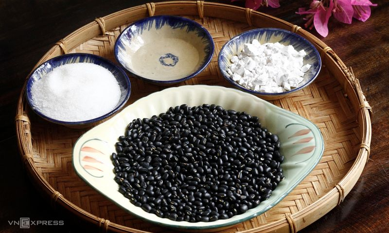
'Siêu thực phẩm' nên ăn hàng ngày để kéo dài tuổi thọ 🔗 MOI
Blue Zones (Vùng Xanh) là những khu vực địa lý nơi người dân có tỷ lệ mắc bệnh mãn tính thấp và tuổi thọ trung bình cao vượt trội, với số lượng người sống trên trăm tuổi nhiều nhất hành tinh. 5 Vùng X
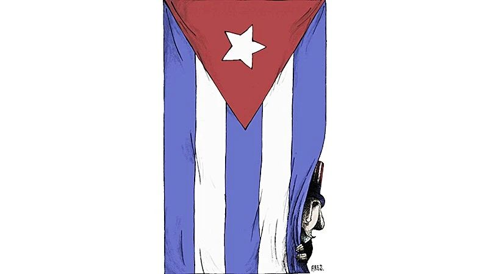
Đoàn kết với “Hòn đảo tự do” 🔗 MOI
Trong Tuyên bố chung gồm 63 điểm sau cuộc họp, diễn ra tại Thủ đô New Delhi (Ấn Độ) từ ngày 14 đến 15/5, các bên bày tỏ sự quan ngại về tình hình ở Cuba, khẳng định sự ủng hộ ngày càng tăng của khối đ
Lan tỏa tinh thần thể thao học đường 🔗 MOI
Còn theo nghiên cứu của Viện Khoa học Giáo dục Việt Nam, học sinh hiện chỉ có hai tiết giáo dục thể chất mỗi tuần, tương đương 70 phút vận động, quá ít so mức cần thiết (tối thiểu 60 phút vận động có

Hỏi & Đáp 🔗 MOI
Tôi vừa nhận quyết định ly hôn và muốn cập nhật tình trạng hôn nhân mới nhất lên hệ thống dữ liệu VNeID thì phải làm cách nào? Xin Thời Nay hướng dẫn giúp. (Nguyễn Văn Thanh, phường Hà Đông, TP Hà Nội

Không “an cư”, cũng chẳng “lạc nghiệp” 🔗 MOI
Long Phạm (Phường Tân Phong, tỉnh Lai Châu) Khoảng 10 năm trước, nhiều hộ dân tại phường Đông Phong, thành phố Lai Châu cũ (nay là phường Tân Phong, tỉnh Lai Châu) bất ngờ khi biết dự án đầu tư xây dự
Kích cầu hàng không, du lịch để thúc đẩy tăng trưởng 🔗 MOI
Dự báo từ quý II/2026, những bất ổn từ tình hình Trung Đông sẽ ảnh hưởng tiêu cực hơn đến sự phát triển kinh tế - xã hội nói chung và nhiều ngành kinh tế. Những ngành có độ mở cao như hàng không, du l
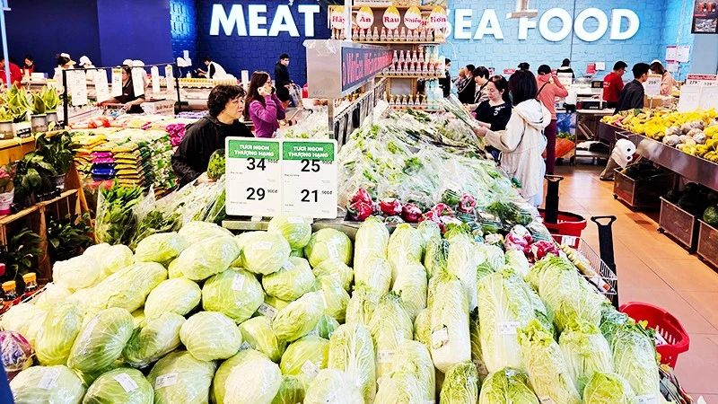
Giữ uy tín nông sản Việt 🔗 MOI
Ông Nguyễn Văn Tâm, chủ một cơ sở trồng sầu riêng tại Đắk Lắk, trước đây cho rằng mã số vùng trồng chỉ là một loại “giấy phép” để đủ điều kiện xuất khẩu. Tuy nhiên, sau khi một lô hàng bị phía Trung Q
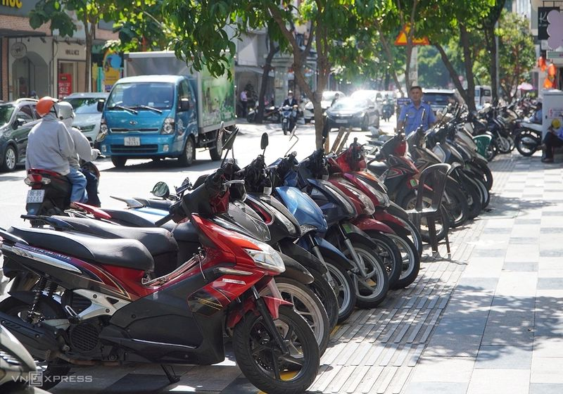
Đề xuất xây phần mềm quản lý, thu phí vỉa hè toàn thành phố 🔗 MOI
Theo đề xuất của Sở Xây dựng gửi UBND TP HCM ngày 18/5, hệ thống sẽ được triển khai trên hạ tầng số của VNPT TP HCM, không sử dụng ngân sách nhà nước. Phần mềm được kỳ vọng số hóa toàn bộ quy trình ti
Bỏ thi lớp 10: Minh bạch dữ liệu mới tránh được cuộc đua điểm số 🔗 MOI
Thí sinh tham dự kỳ thi tuyển sinh lớp 10 tại TP.HCM năm 2025 - Ảnh: THANH HIỆP TP.HCM luôn được nhìn nhận là địa phương có tinh thần 'dám nghĩ, dám làm' trong đổi mới giáo dục. Việc TP đang nghiên cứ

Hệ thống Bảo hiểm xã hội Việt Nam: Tăng tốc thực hiện các chỉ tiêu nhiệm vụ năm 2025 🔗 MOI
Theo Bảo hiểm xã hội (BHXH) TP. Hồ Chí Minh, mặc dù năm 2025 gặp một số khó khăn, tuy nhiên tập thể cán bộ viên chức, người lao động BHXH TP. Hồ Chí Minh quyết tâm hoàn thành vượt chỉ tiêu giao, với s

Coi chừng nhiễm liên cầu lợn vì thói quen ăn tiết canh, thịt tái 🔗 MOI

Làm thế nào để lên thực đơn dinh dưỡng cho gia đình nhiều thế hệ? 🔗 MOI

Khám tiền hôn nhân ở nam và nữ khác nhau như thế nào? 🔗 MOI

Sử dụng thuốc tăng cường sinh lý để kéo dài 'cuộc yêu', có nên không? 🔗 MOI

Chồng không tinh trùng nhưng vợ vẫn sinh được con 'chính chủ', vì sao? 🔗 MOI

Viêm da tiết bã ở trẻ em khác gì ở người lớn? 🔗 MOI

Xóa xăm có xóa được triệt để hay không? 🔗 MOI

6 dấu hiệu thầm lặng cảnh báo đột quỵ trước 1 tháng 🔗 MOI
Theo The Times of India, 6 dấu hiệu của cơ thể cảnh báo trước 1 tháng khi đột quỵ sắp xảy ra: 1. Chóng mặt bất thường Cảm giác chóng mặt thường được cho là do bỏ bữa, mất nước hoặc đứng dậy quá nhanh.
Tuyên dương học sinh giỏi hướng tới kỷ niệm ngày sinh Bác Hồ 🔗 MOI
Tuyên dương, khen thưởng cô Nguyễn Thị Kim Liên (giữa), giáo viên môn tiếng Nhật, trong hoạt động bồi dưỡng học sinh, mang nhiều thành tích trong kỳ thi học sinh giỏi quốc gia cũng như nhiều kỳ thi kh
Supachok khó hồi phục nhanh, cạn hy vọng giúp Thái Lan phục thù tuyển Việt Nam 🔗 MOI
Supachok báo tin dữ cho tuyển Thái Lan - Ảnh: KHAOSOD Mới đây, CLB Sapporo Consadole của Nhật Bản báo tin xấu cho truyền thông Thái Lan biết về khả năng hồi phục của Supachok, người dính chấn thương n
🔗 MOI
Hình ảnh gợi ý đã nói lên tất cả, bạn có đoán ra được câu thành ngữ này là gì không? > Xem đáp án Đáp án Thành ngữ "Ốc không mang nổi mình ốc lại còn mang cọc cho rêu" dùng để chỉ những người còn chưa

Hoàn thiện khung khổ pháp lý về tiết kiệm 🔗 MOI
Pháp luật Trong công cuộc phòng, chống lãng phí hiện nay khó có thể tránh khỏi những khó khăn, nguy hiểm, ảnh hưởng tới người đấu tranh chống lãng phí. Do đó, việc bảo vệ người cung cấp thông tin phát
🔗 MOI
Năm học 2025-2026 sắp khép lại, thành tích học tập của con sẵn sàng cho các bậc phụ huynh tung lên khắp nền tảng mạng xã hội. 'Đại hội' phụ huynh khoe con xin được phép bắt đầu - Tranh: Viiip Con tui
Xác minh clip người phụ nữ chửi bới, đánh tài xế lớn tuổi sau va chạm xe 🔗 MOI
Có gì trong Không gian văn hóa Hồ Chí Minh ứng dụng thực tế ảo tại TP.HCM? 🔗 MOI
Các đại biểu trải nghiệm khu vực thực tế ảo tại Không gian văn hóa Hồ Chí Minh - Ảnh: HOÀI PHƯƠNG Chiều 18-5, Ủy ban Mặt trận Tổ quốc Việt Nam phường Minh Phụng (TP.HCM) và các tổ chức chính trị - xã
Công an vào cuộc xác minh vụ nam sinh ở Lâm Đồng tự tử, nghi do bị bạo lực học đường 🔗 MOI
Học sinh Đ.M.H. đang cấp cứu tại Bệnh viện Nhi đồng Thành phố (TP.HCM) - Ảnh: gia đình cung cấp Chiều 18-5, UBND xã Di Linh, tỉnh Lâm Đồng xác nhận trên địa bàn vừa xảy ra vụ việc đau lòng: một nam họ
Real Madrid và 6 mùa bóng liên tiếp chia tay đội trưởng 🔗 MOI
Carvajal chia tay Real Madrid sau 13 năm gắn bó - Ảnh: REUTERS Thông tin này vốn đã được đồn đoán từ nhiều tháng qua, khi Real Madrid lần lữa không gia hạn hợp đồng với đội trưởng Carvajal. Đến ngày 1
Tòa tuyên y án 25 năm tù đối với Chủ tịch Công ty TSL 🔗 MOI
Bị cáo Đoàn Hữu Lượng tại phiên tòa - Ảnh: HỮU DUY Sau bản án sơ thẩm, 55 bị cáo kháng cáo xin giảm nhẹ hình phạt. Hội đồng xét xử chấp nhận kháng cáo của 15 bị cáo, giảm từ 1 đến 2 năm tù hoặc chuyển
Khoảnh khắc đá rơi trúng đầu xe máy, nhiều người thoát chết trong gang tấc 🔗 MOI

Cải cách tài chính công thúc đẩy tăng trưởng 🔗 MOI
Pháp luật Trong những năm qua, cùng với việc đẩy mạnh tiến trình xây dựng Nhà nước pháp quyền Việt Nam xã hội chủ nghĩa, công tác xây dựng và hoàn thiện hệ thống pháp luật đã đạt được nhiều thành tựu
Cháu bé 8 tuổi được cứu sống sau khi bị sóng cuốn ra biển 150 mét 🔗 MOI
Quân y biên phòng, y tế xã đang sơ cứu khẩn cấp để cứu cháu bé bị sóng cuốn ra biển - Ảnh: T.G Tối 18-5, Đồn biên phòng Roòn (xã Hòa Trạch, tỉnh Quảng Trị) cho biết quân y đơn vị vừa phối hợp với Trạm
Tay cơ Việt Nam 17 tuổi làm nên bất ngờ ở World Cup billiards 🔗 MOI
Tay cơ 17 tuổi Nguyễn Minh Trí gây bất ngờ tại World Cup billiards TP.HCM - Ảnh: ĐỨC PHONG Ngay lập tức, một tay cơ trẻ của Việt Nam đã gây bất ngờ tại kỳ World Cup billiards diễn ra trên sân nhà. Nhâ
Thạc sĩ Lê Thu Trà thi Hoa hậu Liên lục địa 2026 🔗 MOI
Á hậu Lê Thu Trà được chọn đại diện Việt Nam tại Hoa hậu Liên lục địa 2026 - Ảnh: FBNV Tối 18-5, đơn vị nắm bản quyền cuộc thi Hoa hậu Liên lục địa công bố á hậu Lê Thu Trà sẽ đại diện Việt Nam dự thi
Tin tức sáng 19-5: Người dân Côn Đảo được khám sức khỏe, tiêm vắc xin cúm miễn phí nhiều năm 🔗 MOI
Ảnh minh họa Già hóa dân số, gia tăng bệnh lý cơ xương khớp Tỉ lệ vẹo cột sống do thoái hóa ở người trưởng thành tăng theo độ tuổi, chiếm từ 6,3% đến 68% dân số tùy theo các nghiên cứu lâm sàng. Tại V
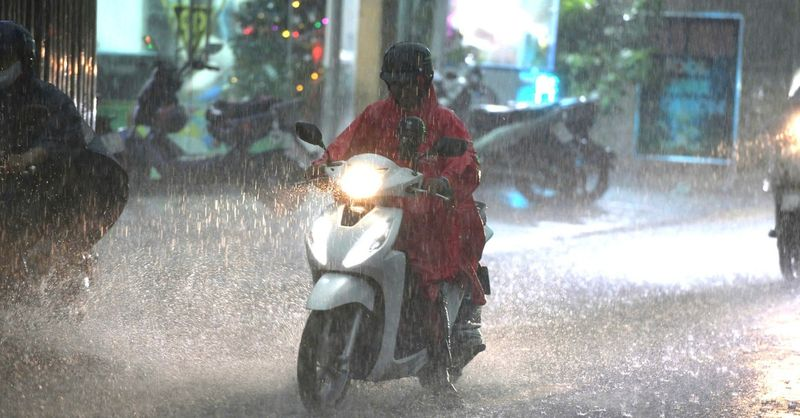
Thời tiết hôm nay 19-5: Cả nước mưa, có nơi mưa rất to 🔗 MOI
Hôm nay 19-5, thời tiết cả nước có mưa to đến rất to - Ảnh: T.L Trung tâm Dự báo khí tượng thủy văn quốc gia cho biết hôm nay 19-5, thời tiết Đông Bắc Bộ và Thanh Hóa, Nghệ An mưa vừa và rải rác có dô
Neymar chính thức dự World Cup, 1 ngôi sao Brazil khác bị gạch tên 🔗 MOI
Neymar vẫn dự World Cup 2026 cùng tuyển Brazil - Ảnh: REUTERS Sự hiện diện của Neymar là một trong những chủ đề được tranh luận nhiều nhất khi làng bóng đá hướng đến World Cup 2026. Dưới thời HLV Carl

Nhật Bản ra mắt 'máy giặt người' trị giá 385.000 USD, làm sạch từ đầu đến chân trong 15 phút 🔗 MOI
Thống đốc Yoshimura Yoshifumi của tỉnh Osaka trải nghiệm máy giặt người Mirai - Ảnh: SISA COMMUNICATION YOUTUBE Theo trang Interesting Engineer ngày 30-11, Công ty Science Inc. của Nhật Bản vừa chính
Nhật Bản, Hàn Quốc ghi nhận nắng nóng kỷ lục ngay đầu mùa 🔗 MOI
Người dân sử dụng ô che nắng đi lại trên đường phố Tokyo (Nhật Bản) giữa cái nóng gay gắt ngày 29-7-2025 - Ảnh: KYODO Tại Nhật Bản, Cơ quan Khí tượng nước này (JMA) đã ghi nhận "ngày nắng nóng cực độ"
Tượng Thần Gián khổng lồ gây sốt tại Nhật Bản 🔗 MOI
Bức tượng Gokiburiten (Thần Gián) tại chùa Rinsenji ở thành phố Nara (Nhật Bản) - Ảnh: KYODO Theo Hãng tin Kyodo ngày 18-5, một bức tượng Thần Gián bằng đồng khổng lồ với cánh tay cơ bắp và tư thế của
Huế được vinh danh 'Thành phố xuất sắc quốc gia' về hành động khí hậu 🔗 MOI
TP Huế được WWF vinh danh là "Thành phố xuất sắc quốc gia", ghi nhận những nỗ lực nổi bật trong ứng phó biến đổi khí hậu và phát triển đô thị bền vững - Ảnh: NHẬT LINH Ngày 18-5, UBND TP Huế cho biết
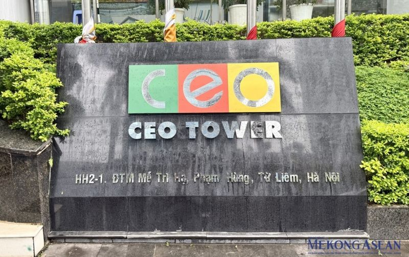
CEO có quý lãi cao nhất 3 năm 🔗 MOI
Động lực tăng trưởng lợi nhuận của CEO chủ yếu đến từ việc cải thiện doanh thu, ngoài ra còn được đóng góp bởi lãi thoái vốn đầu tư vào công ty con. Trụ sở CEO Group tại Hà
bảng giá truyền thông 🔗 MOI

Thông cáo báo chí 🔗 MOI
Thông cáo báo chí 18/05/2026 (Chinhphu.vn) - Văn phòng Chính phủ vừa có Thông cáo báo chí chỉ đạo, điều hành của Chính phủ, Thủ tướng Chính phủ ngày 18/5/2026 (1). 17/05/2026 (Chinhphu.vn) - Văn phòng
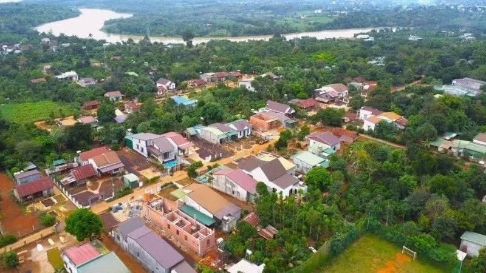
Đổi thay ở vùng đồng bào dân tộc thiểu số Lâm Đồng 🔗 MOI
Trở lại những buôn làng, thôn bản tại Lâm Đồng hôm nay, dễ dàng cảm nhận được sự đổi thay rõ nét. Tháng 5, chúng tôi trở lại buôn Bu Dăr thuộc xã vùng biên giới Quảng Trực. Tây Nguyên vào cao điểm mùa
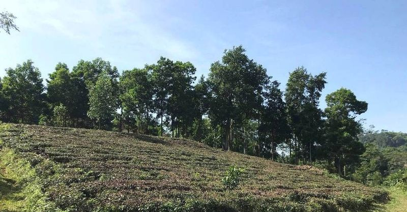
Chuyển sang đất ở, đất không có nguồn gốc vườn ao có được giảm tiền sử dụng đất? 🔗 MOI
Ông D.T.T, một người dân, cho biết, theo điểm c khoản 2 Điều 10 Nghị quyết số 254/2025/QH15 quy định các trường hợp đất vườn, ao hoặc đất nông nghiệp trong cùng thửa đất có đất ở khi chuyển mục đích s
Mưa to kéo dài đến 21/5, Bắc Bộ và Trung Bộ sắp bước vào đợt nắng nóng mới 🔗 MOI
Facebook Twitter Lưu bài viết Bản in Copy link Theo Trung tâm Dự báo khí tượng thủy văn Quốc gia, từ 19/5 đến ngày 20/5, khu vực Đông Bắc Bộ cùng các tỉnh Thanh Hóa, Nghệ An tiếp tục xuất hiện mưa, mư
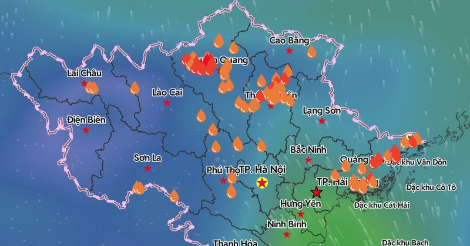
Mưa to bất thường ở miền Bắc kéo dài đến bao giờ? 🔗 MOI
Theo Trung tâm Dự báo khí tượng thủy văn quốc gia (NCHMF), trong đêm qua và sáng sớm nay (19.5), nhiều nơi ở Bắc bộ tiếp tục xuất hiện mưa to đến rất to dẫn đến nguy cơ lũ quét, sụt lún và sạt lở đất
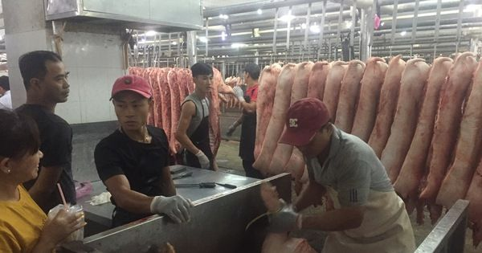
Giá heo hơi hôm nay, 19-5: Tăng ở chợ đầu mối 🔗 MOI
Ngày 19-5, thông tin từ các thương lái cho biết giá heo mảnh tại chợ đầu mối nông sản thực phẩm Hóc Môn (TPHCM) tăng 2.000 đồng, lên 75.000 – 85.000 đồng/kg. Sản lượng heo mảnh nhập về chợ đầu mối giả
Neymar vẫn dự World Cup 2026, HLV Ancelotti giải thích lý do bất ngờ 🔗 MOI
Canh bạc mạo hiểm của HLV Ancelotti? Chọn Neymar, HLV Ancelotti cũng quyết định loại tiền đạo 24 tuổi đang lên Joao Pedro của Chelsea, cầu thủ đã ghi đến 15 bàn và có 5 kiến tạo tại giải Ngoại hạng An
Virus Hanta: Tàu du lịch MV Hondius cập cảng Hà Lan để khử trùng và cách ly 🔗 MOI
Ngày 18/5 theo giờ địa phương, tàu du lịch MV Hondius, liên quan đến vụ bùng phát virus Hanta gây chú ý quốc tế trong những ngày qua, đã cập cảng Rotterdam của Hà Lan để tiến hành khử trùng và cách ly
Vận dụng sáng tạo tư tưởng Hồ Chí Minh trong kỷ nguyên mới của dân tộc 🔗 MOI
Người đã sáng lập và rèn luyện Đảng Cộng sản Việt Nam ; hy sinh trọn đời cho sự nghiệp giải phóng dân tộc, đấu tranh cho hòa bình, hạnh phúc của Nhân dân Việt Nam và nhân dân thế giới. Người là hiện t
“Vua mới” V-League và những cuộc chiến sinh tử 🔗 MOI
(PLO)- V-League 2025 - 2026 đã sớm tìm ra nhà vua mới sau vòng 23, nhưng cuộc đua huy chương và màn trốn chạy suất rớt hạng vẫn đang rất căng thẳng. CLB Công an Hà Nội đã đánh bại Thanh Hóa 2-0 trên s
LPBank Ninh Bình giành vé bán kết cuối Cúp bóng chuyền VTV9 – Bình Điền 2026 🔗 MOI
Loạt trận cuối vòng bảng Cúp VTV9 – Bình Điền 2026 diễn ra khá căng thẳng tối 18-5 đã xác định thêm đội bóng cuối cùng góp mặt ở vòng bán kết, cho dù màn ngược dòng của LPBank Ninh Bình trước ứng viên
Phòng tránh sốc phản vệ do dị ứng với thuốc, thực phẩm 🔗 MOI
Diễn tiến nhanh Chiều cuối tuần đầu tháng 5, anh Trần Quốc Bảo (38 tuổi, ngụ phường Bình Tân) đưa con gái 10 tuổi đi ăn lẩu hải sản tại một nhà hàng gần nhà. Khoảng 15 phút sau bữa ăn, bé bắt đầu than
Sắt son một lòng hướng về Bác 🔗 MOI
Báo Nhân Dân đăng bài viết “ Hoạ bản do Hồ Chủ tịch vẽ”. tháng 6/1945 Tiếng hát xuyên ngục tối Tại những nơi được mệnh danh là "địa ngục trần gian", kẻ thù có thể giam cầm thân xác nhưng không thể ngă
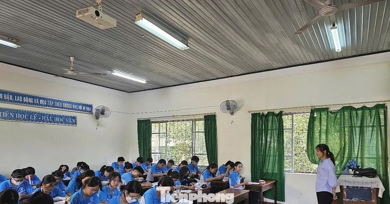
Vì sao xét thăng hạng giáo viên ở Đắk Lắk ‘tắc’ nhiều năm? 🔗 MOI
Sau sáp nhập, ngành giáo dục Đắk Lắk hiện có hơn 38.000 cán bộ quản lý, giáo viên và giảng viên. Tuy nhiên, việc xét thăng hạng chức danh nghề nghiệp cho giáo viên nhiều năm qua vẫn “giậm chân tại chỗ
Giải bài toán khoảng trống tư liệu di sản Chăm 🔗 MOI
Thách thức từ "vùng trắng" tư liệu Hôm qua (18.5), Bảo tàng Điêu khắc Chăm Đà Nẵng phối hợp cùng Viện Viễn Đông Bác cổ Pháp (EFEO) tổ chức tọa đàm với chủ đề "Nhịp cầu di sản - Từ việc thành lập Bảo t
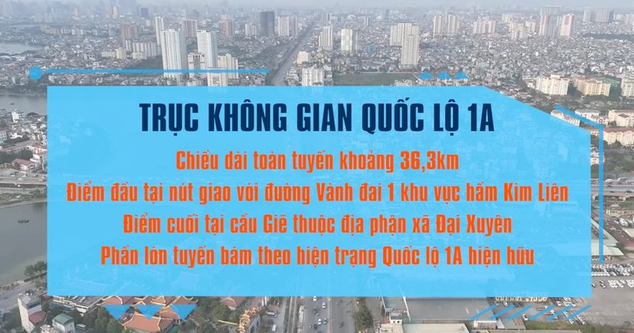
[Video] Hà Nội khởi công dự án mở rộng Quốc lộ 1A lên 10 làn xe, rộng 90m 🔗 MOI
TP Hà Nội dự kiến hoàn thành Trục không gian Quốc lộ 1A đoạn từ nút giao Vành đai 1 - hầm Kim Liên đến cầu Giẽ trong năm 2027. HƯƠNG GIANG.
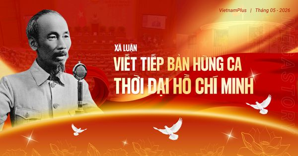
XÃ LUẬN: VIẾT TIẾP BẢN HÙNG CA THỜI ĐẠI HỒ CHÍ MINH 🔗 MOI
Chân dung các nhà khoa học Việt tạo dấu ấn thời đại 🔗 MOI
Thắng nghẹt thở Burnley, Arsenal chạm tay chức vô địch Ngoại hạng Anh 🔗 MOI
Havertz ghi bàn đem về chiến thắng 1-0 cho Arsenal trước Burnley Trong bối cảnh chỉ còn 2 vòng đấu, nếu Man City để rơi điểm trước Bournemouth ở vòng đấu này, Arsenal sẽ chính thức đăng quang chức vô
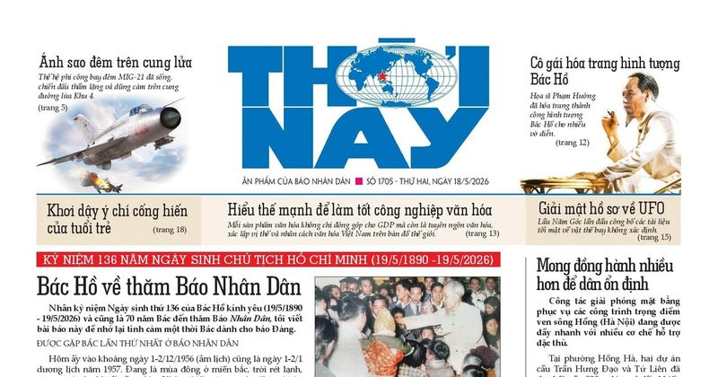
BÁO THỜI NAY SỐ 1705 🔗 MOI
Vụ 5 nam sinh tử vong: Nghẹn lòng hình ảnh người mẹ trẻ ngã quỵ ven sông 🔗 MOI
Ghi nhận của PV VietNamNet tại khu vực bờ sông Lô, tỉnh Phú Thọ, hàng trăm người dân cùng lực lượng chức năng tập trung tại khu vực bãi bồi ven sông Lô. Vị trí các em xuống tắm được xác định nằm ở đoạ
Báo Nhân Dân số 25750 🔗 MOI
Dự báo thời tiết ngày 19-5: Bắc Bộ mưa giông, Nam Bộ mưa to đến rất to 🔗 MOI
(PLO)- Dự báo thời tiết ngày 19-5, khu vực Đông Bắc Bộ và Thanh Hóa, Nghệ An có mưa, mưa vừa và rải rác có giông. Dự báo thời tiết ngày 19-5 , các khu vực trên cả nước có mưa rào và giông vài nơi, chi
'Gót chân Achilles' của bộ ngành trong cải cách hành chính 🔗 MOI
Nấm mối đầu mùa hơn một triệu đồng mỗi kg vẫn 'cháy hàng' 🔗 MOI
Những cơn mưa đầu mùa vừa xuất hiện, anh Nguyễn Thanh Tâm, người có hơn 5 năm săn nấm mối tại Tây Ninh, cùng nhóm bạn mang theo đèn pin, bao đựng chạy xe khắp các rừng cao su để tìm nấm mối. Theo anh
Cảnh báo cho ca sĩ Hòa Minzy 🔗 MOI
Mạng xã hội Threads tuần qua trao đổi rất sôi nổi các chủ đề về ca sĩ Hòa Minzy sau chương trình Sao Nhập Ngũ Concert 2026. Trong đó, nổi lên có bài viết với hơn 10 nghìn lượt tương tác, theo đó, một
Honda Cub cũ nát được “cải lão hoàn đồng” thành xe đẹp như mới 🔗 MOI
Những chiếc Honda Cub cũ bạc màu, hoen gỉ, nằm phủ bụi ở góc kho hay bị bỏ quên nhiều năm giờ đây đang được nhiều người săn lùng trở lại. Không còn là phương tiện đi lại đơn thuần, Cub trở thành biểu
Thêm nghệ sĩ lên tiếng chuyện bị đánh cắp bản quyền nhạc 🔗 MOI
Thiên Vương cho biết thời điểm MTV phát hành những bài hát, album bằng hình thức vật lý, phải thông qua một đơn vị phát hành nào đó để xin giấy phép, tem phát hành… chứ không tự phát hành như hiện tại
[Video] Chuyện kể về những lần sinh nhật Bác 🔗 MOI
Ngày 18 tháng 5 năm 1946, trên trang nhất báo Cứu Quốc đăng một bài báo đặc biệt với tựa đề “Cụ Hồ Chí Minh với dân tộc Việt Nam”. Bài báo đã chính thức thông báo ngày sinh của Chủ tịch Hồ Chí Minh, 1
[Video] Dự báo thời tiết ngày 19/5/2026: Mưa dông gia tăng, Bắc Bộ cảnh báo lũ quét vùng núi 🔗 MOI
Trong ngày hôm nay, thời tiết trên cả nước tiếp tục duy trì trạng thái đan xen giữa nắng và mưa dông, trong đó Bắc Bộ vẫn là khu vực có diễn biến thời tiết phức tạp nhất. Tại Bắc Bộ, do chịu tác động
Học Bác tinh thần hành động cách mạng trong kỷ nguyên vươn mình 🔗 MOI
K ỷ niệm 136 năm ngày sinh Chủ tịch Hồ Chí Minh (19-5-1890 - 19-5-2026) diễn ra trong bối cảnh cả nước và TP.HCM đang bước vào nhiệm kỳ hành động mạnh mẽ theo tinh thần Đại hội XIV của Đảng. Hơn lúc n
Báo Pháp Luật TP. Hồ Chí Minh 🔗 MOI
Báo Sài Gòn Giải Phóng ngày 19/5/2026 🔗 MOI
Theo cano ghi lại khoảnh khắc cá voi mẹ dạy con săn mồi trên biển Đắk Lắk 🔗 MOI
Sáng 16.5, tại vùng biển Cù Lao Mái Nhà (xã Ô Loan, tỉnh Đắk Lắk ) bất ngờ xuất hiện cặp cá voi mẹ tập cho cá voi con săn mồi. Biết được thông tin đó, anh Trần Phương (40 tuổi, nhiếp ảnh gia tự do ở T
Bản tin thời sự sáng 19/05/2026: Hôm nay, Hà Nội khởi công dự án mở rộng Quốc lộ 1A lên 10 làn xe, rộng 90 m 🔗 MOI
'Bóng ma' bạo lực tại Mexico trước thềm World Cup 🔗 MOI
Hàng loạt vụ tấn công Đại diện Cơ quan Công an bang Puebla (Mexico) ngày 17.5 thông báo 10 người thiệt mạng trong một vụ tấn công vũ trang tại thị trấn Tehuitzingo (bang Puebla) ở nước này vào rạng sá
Thời gian giam giữ để chờ thi hành án tử có được tính khi xét giảm án? 🔗 MOI
Bộ Tư pháp đã công bố tài liệu thẩm định hồ sơ chính sách dự án Bộ luật Hình sự (sửa đổi) do Bộ Công an chủ trì soạn thảo. Điều 60 Bộ luật Hình sự (BLHS) hiện hành quy định thời hiệu thi hành bản án đ
Đề xuất hợp lòng dân, cần làm nhanh để tránh lãng phí 🔗 MOI
G IẢI "CƠN KHÁT" HẠ TẦNG DÂN SINH Đứng ở góc độ của một phụ huynh, bạn đọc (BĐ) Nguyễn Đức Toàn cho rằng: "Nhiều người cứ nghĩ trường học hay bệnh viện phải xây mới hoàn toàn mới đạt chuẩn, nhưng thực
Kết quả bóng đá hôm nay 19/5: Arsenal tiến sát ngôi vô địch 🔗 MOI
Kết quả bóng đá hôm nay NGÀY GIỜ TRẬN ĐẤU TRỰC TIẾP NGOẠI HẠNG ANH 2025/26 – VÒNG 37 19/05 02:00 Arsenal 1-0 Burnley FPT PLAY VĐQG THỤY ĐIỂN 2026 – VÒNG 8 19/05 00:00 Orgryte 1-2 IFK Goteborg Djurgard
Chủ tịch Hồ Chí Minh - Cả một đời vì đất nước, vì nhân dân 🔗 MOI
Facebook Twitter Lưu bài viết Bản in Copy link Không chỉ là vị lãnh tụ thiên tài, người anh hùng giải phóng dân tộc, Chủ tịch Hồ Chí Minh còn là biểu tượng cao đẹp của lòng nhân ái, đức hy sinh và tìn
Nguyễn Thị Quỳnh Dung: 'Em bé' có 7 bức ảnh chụp cùng Chủ tịch Hồ Chí Minh 🔗 MOI
Những bức ảnh mẹ gìn giữ Trên Facebook cá nhân, bà Nguyễn Thị Quỳnh Dung chia sẻ: "Hôm nay đến thăm mẹ, nhân thể mượn mẹ album để chụp lại bức ảnh này. Mình được sinh ở Tân Trào - Chiến khu Việt Bắc n
Kỳ thủ nằm trên giường đấu cờ ở Grand Chess Tour 🔗 MOI
Câu chuyện bắt đầu sau ván ba của giải, nơi quy tụ nhiều tên tuổi hàng đầu như Wesley So, Maxime Vachier-Lagrave, Praggnanandhaa Rameshbabu hay Fabiano Caruana. Firouzja gặp chấn thương mắt cá chân, k
Brazil chốt danh sách World Cup 2026: Neymar đi vào lịch sử 🔗 MOI
Rạng sáng 19/5 (giờ Hà Nội), HLV Carlo Ancelotti đã công bố danh sách 26 cầu thủ của đội tuyển Brazil tham dự World Cup 2026. Điểm đáng chú ý là Neymar được góp mặt, và “Hoàng tử” bóng đá Brazil sẽ th

Dự báo thời tiết 19/5/2026: Cả nước mưa giông, nhiều nơi có thể mưa rất to 🔗 MOI
Theo Trung tâm Dự báo khí tượng thủy văn quốc gia, ngày 19/5, khu vực Đông Bắc Bộ và Thanh Hóa, Nghệ An có mưa, mưa vừa và rải rác có giông, cục bộ có nơi mưa to đến rất to; lượng mưa phổ biến 20-30mm
Xóm cắt lưới, phá dây thừng ở TP.HCM 🔗 MOI
Xóm cắt lưới, phá dây thừng nằm sâu trong con đường nhỏ ngoằn ngoèo. Những người cắt lưới chọn vạt đất trống che bạt để hành nghề. Một nhóm người khác chọn sân nhà để ngồi phá dây thừng.

Tử vi ngày 19 tháng 5: Con giáp nào may mắn hôm nay? 🔗 MOI
Tuổi Tí trong tử vi ngày 19 tháng 5 có thể cảm thấy hơi áp lực khi công việc quay lại dồn dập đầu tuần. Tuy nhiên, khi bạn xử lý từng việc một thay vì nghĩ đến toàn bộ vấn đề cùng lúc, mọi thứ sẽ dễ k
Món ăn dân dã nào khiến Bác Hồ 'nhớ mãi không quên'? 🔗 MOI
1. Món ăn dân dã nào khiến Bác Hồ "nhớ mãi không quên"? Canh cua rau đay 0% Cá bống kho lá gừng 0% Mắm tôm chua 0% Chính xác Theo Trang thông tin Bảo tàng Hồ Chí Minh, trong những món ăn mang hương vị
U17 Việt Nam lấy vé World Cup: Bầu Đức và nỗi niềm riêng 🔗 MOI
Tấm vé World Cup U17 Việt Nam giành vé dự World Cup là chiến tích khiến cả nền bóng đá nước nhà phải tự hào. Nhưng trong ngày vui ấy, nhiều người lại chợt nhớ đến một cái tên: HAGL, nơi từng được xem
Chạy ngược chiều vì 'nhìn nhầm biển báo', tài xế xe tải bị phạt đến 20 triệu đồng 🔗 MOI
(PLO)- Nam tài xế xe tải thừa nhận do thiếu quan sát, nhìn nhầm biển báo nên đã điều khiển xe đi ngược chiều gần 500 m trên đường Liên Phường, TP.HCM. Ngày 19-5, Đội CSGT Cát Lái thuộc Phòng CSGT (PC0
Tài xế xe tải đi ngược chiều bị CSGT TP.HCM phạt 19 triệu nói... do nhìn nhầm 🔗 MOI
Sáng 19.5, Đội CSGT Cát Lái, thuộc Phòng CSGT (PC08) Công an TP.HCM cho biết đơn vị đã mời nam tài xế điều khiển xe tải đi ngược chiều trên đường Liên Phường, gây xôn xao mạng xã hội đến trụ sở để làm
Arsenal tiến sát ngôi vương Ngoại hạng Anh 🔗 MOI
Arsenal trải qua trận đấu khó khăn hơn nhiều so với dự đoán. Burnley chính thức xuống hạng từ ngày 22/4, sa thải HLV Scott Parker không lâu sau đó và bước vào trận đấu dưới sự dẫn dắt tạm quyền của Mi
Trao giải Cuộc thi Ý tưởng khởi nghiệp sáng tạo sinh viên APEC Innovation lần thứ I 🔗 MOI
Sau 4 tháng phát động, cuộc thi đã thu hút 468 ý tưởng khởi nghiệp từ 1.338 sinh viên của 84 trường đại học, cao đẳng trên cả nước. Các ý tưởng trải rộng trên nhiều lĩnh vực, qua 4 vòng thi, Ban Giám
Về bức ảnh Bác Hồ tặng hoa nữ thanh niên xung phong 🔗 MOI
1 . Như nhiều thanh niên khác trong thời kỳ chống Mỹ, cứu nước, vừa tốt nghiệp trung cấp giao thông vận tải, tôi đã hướng cuộc sống của mình vào chiến trường. Và trở thành cán bộ kỹ thuật của Tổng đội
Hà Nội bứt tốc hoàn thiện hạ tầng đô thị 🔗 MOI
Từ khu vực trung tâm đến các trục vành đai, hàng loạt công trình giao thông, thoát nước, metro, cầu vượt… đang đồng loạt được triển khai với nhịp độ khẩn trương, khiến Thủ đô như một đại công trường l

Google ra mắt Gemma 4, AI chạy offline trên thiết bị cá nhân 🔗 MOI
Gemma 4 chạy trực tiếp trên thiết bị cá nhân - Ảnh: THOMAS FULLER Trong bối cảnh trí tuệ nhân tạo vẫn phụ thuộc vào hạ tầng đám mây, việc một mô hình có thể hoạt động trực tiếp trên thiết bị cá nhân đ
Bị trừ hết điểm giấy phép lái xe: Thi lại khó gấp đôi 🔗 MOI
Theo dự thảo sửa đổi Thông tư số 65/2024 của Bộ Công an quy định về kiểm tra kiến thức pháp luật để phục hồi điểm giấy phép lái xe (GPLX), tài xế bị trừ hết điểm khi thi lại sẽ phải làm gấp đôi lượng
Khơi dậy ý chí cống hiến của tuổi trẻ 🔗 MOI
Lan tỏa tinh thần yêu nước Với chủ đề "Tự hào truyền thống 70 năm Hội Liên hiệp Thanh niên Việt Nam", các hoạt động được triển khai từ tháng 5 đến tháng 10 trên phạm vi toàn quốc. Trong đó tập trung v
LVMH không còn sở hữu Marc Jacobs 🔗 MOI
Trong năm nay, LVMH sẽ chuyển giao thương hiệu này cho WHP Global, chủ sở hữu và sẽ vận hành thương hiệu này thông qua một liên doanh với G-III Apparel. Đây sẽ là một trong những vụ thoái vốn quan trọ
Mở cao điểm tấn công tội phạm 🔗 MOI
Đây được xác định là đợt tổng tấn công quy mô lớn, huy động tối đa lực lượng để rà xét từng địa bàn, bóc gỡ từng ổ nhóm và triệt xóa các tụ điểm phức tạp. Quyết tâm của toàn lực lượng là không để tội

Cơ bản đã nhạt màu làng cổ! 🔗 MOI
Trong cơn lốc đô thị hóa, những hình ảnh quý giá của chùa cổ, đền xưa, cổng cũ, nhà truyền thống với vẻ đẹp của các kiến trúc và điêu khắc gỗ, đá, gạch vữa… đã phai nhạt, chìm lấp trong sự chen lấn củ
Hậu quả khôn lường từ “món khoái khẩu” 🔗 MOI
Những con số đáng lo Chỉ tính riêng trong hơn hai năm gần đây, tại các địa phương thuộc tỉnh Thái Bình cũ ghi nhận 3 trường hợp tử vong, 64 người nhập viện và tự điều trị tại nhà sau khi sử dụng tiết
Mong đồng hành nhiều hơn để dân ổn định 🔗 MOI
Tại phường Hồng Hà, hai dự án cầu Trần Hưng Đạo và Tứ Liên đã thu hồi gần 338 nghìn m² đất, khiến 580 hộ dân phải rời nơi ở cũ. Cuộc di dân lịch sử đặt ra yêu cầu cấp thiết về bảo đảm sinh kế, ổn định

Tạm giữ 7 đối tượng vụ 2 nhóm thanh niên ẩu đả, cô gái gục trên vỉa hè ở Hà Nội 🔗 MOI
Trước đó, mạng xã hội lan truyền nhiều clip và hình ảnh ghi lại cảnh hai nhóm nam nữ thanh niên xảy ra xô xát ngay trên vỉa hè và lòng đường khu vực Phố Huế (phường Hai Bà Trưng) vào khoảng 23h ngày 1
Xót xa nhà hát 241 tỷ đồng ở Bắc Ninh xuống cấp sau hơn 6 năm sử dụng 🔗 MOI
Theo ghi nhận thực tế, nhiều chi tiết trang trí bên ngoài nhà hát đã bị rơi vỡ, hư hỏng nặng. Tại khu vực sảnh chính, nền đá xuất hiện tình trạng sụt lún, tạo thành những vết nứt lớn kéo dài, gây nguy
Cuộc sống diễn viên Minh Cúc bên con gái mắc bệnh bại não 🔗 MOI
Nghệ sĩ mới trở lại màn ảnh với vai Bích Chột trong phim đề tài tình báo Tận hiến. Nhân vật là đàn em của Nguyễn Thành (bí danh Thành Lai, Hứa Vĩ Văn đóng). Bích mang trong mình những vết thương sâu s
Valdano: 'Real cần ít nhất 5 tân binh nếu Mourinho trở lại' 🔗 MOI
Real nhiều khả năng sẽ trải qua kỳ chuyển nhượng mùa hè biến động. Ngày 18/5, đội bóng hoàng gia xác nhận chia tay Dani Carvajal , khép lại 13 mùa giải gắn bó với đội một và hơn hai thập kỷ từ ngày gi
Bước ngoặt cuộc đời của nữ sinh bị kẻ hiếp dâm tấn công khi ngủ 🔗 MOI
Kimberly đang bị một gã đàn ông lạ mặt đè lên người, giữ chặt. Hắn bảo cô không được nói gì rồi ấn mặt cô xuống gối. "Đó là khoảnh khắc thời gian dường như đóng băng", Kimberly nhớ lại.
Bộ Công an đề xuất nhiều hành vi chuẩn bị phạm tội cũng có thể bị phạt tù 🔗 MOI
Theo Bộ luật Hình sự hiện hành quy định 25 tội mà người chuẩn bị phạm tội phải chịu trách nhiệm hình sự, chủ yếu về các tội xâm phạm an ninh quốc gia, một số tội xâm phạm tính mạng, sở hữu có tính chấ
Những cải tiến vượt trội của siêu tên lửa Starship V3 🔗 MOI
Theo Space , SpaceX dự kiến phóng phiên bản mới nhất của tên lửa siêu tải trọng Starship V3 vào ngày 19/5. Đây là phương tiện phóng lớn và mạnh nhất từng được chế tạo, hứa hẹn tác động lớn tới ngành h
Ông Kim đau đầu khi Xuân Son 'tịt ngòi' ở V-League 🔗 MOI
Xuân Son có được lên tuyển ? Xuân Son vắng mặt ở các cấp độ sau khi dính chấn thương nặng trong trận chung kết lượt về AFF Cup 2024 ngày 5.1.2025. Sau khoảng 10 tháng điều trị, đến ngày 11.10, tiền đạ
Cánh cửa đội tuyển Việt Nam chưa khép lại với Công Phượng 🔗 MOI
Còn quá sớm để nói rằng Công Phượng sẽ trở lại đội tuyển VN chỉ sau một bàn thắng, dù cho đó là cú sút phạt trực tiếp cực kỳ đẹp mắt. Điều quan trọng hơn với tiền đạo của Trường Tươi Đồng Nai lúc này
5 ngày đếm ngược đến Triển lãm VietAd 2026 - Hà Nội 🔗 MOI
Triển lãm VietAd 2026 đem đến những trải nghiệm công nghệ cho khách tham quan. - Ảnh: Ban Tổ chức Nơi hội tụ công nghệ số và kết nối toàn cầu Với xu hướng tái cấu trúc mạnh mẽ của các chuỗi cung ứng c
Pep Guardiola chia tay Man City sau vòng 38 Ngoại hạng Anh 🔗 MOI
Qua một thập kỷ thành công vang dội cùng Citizens, Pep Guardiola sẽ rời sân Etihad sau cuộc đấu Aston Villa vào Chủ nhật này (24/5). Chuyển đến từ Bayern Munich, Pep nhanh chóng giúp Man City thống tr
10 mẹo cực kỳ hữu ích trên iPhone phiên bản iOS 26 🔗 MOI
Theo Macrumors , dưới đây là một số mẹo đáng chú ý dành cho người dùng iPhone chạy iOS 26 trở lên: Biến ứng dụng thành widget Người dùng có thể nhanh chóng chuyển hầu hết ứng dụng thành widget - tiện
Quảng bá phở Việt Nam ở châu Âu 🔗 MOI
Nhưng hiện nay, với sự phát triển của cộng đồng, các nhà hàng phở được mở ở nhiều phố phường nơi bà sinh sống. Có điều, những quán phở đặc sắc, đúng vị quê hương để mời khách quý hoặc giới thiệu đến b
CR7 lại lỡ danh hiệu cùng Al Nassr 🔗 MOI
Thất bại trước Gamba Osaka là trận chung kết thứ tư liên tiếp Al Nassr để thua kể từ khi Ronaldo gia nhập đầu năm 2023. Theo thống kê, Al Nassr đã bỏ lỡ 14 danh hiệu chính thức trong thời gian có CR7,
Chelsea và “ván cược” đường dài 🔗 MOI
Điểm mấu chốt đáng chú ý của sự hợp tác này không chỉ ở cái tên Alonso, mà còn là sự nhượng bộ mang tính bước ngoặt của giới chủ The Blues: Họ quyết định trao cho chiến lược gia người Tây Ban Nha quyề
Tập huấn livestream bán hàng cho nữ giới 🔗 MOI
Thạc sĩ Vũ Kim Oanh (Công ty TNHH Giải pháp doanh nghiệp iViet) cho biết, trong bối cảnh kinh doanh số phát triển mạnh mẽ, livestream không còn là xu hướng mà đã trở thành kỹ năng thiết yếu giúp doanh
Tin tức tối 18-5: Đuối nước thương tâm ở Phú Thọ, đã vớt thi thể 5 em học sinh 🔗 MOI
Gửi bình luận Bình luận ( 0 ) Hiện chưa có bình luận nào, hãy là người đầu tiên bình luận Xem thêm bình luận

CMC OpenAI phát triển mô hình AI pháp lý tiếng Việt 🔗 MOI
Bộ chuẩn đánh giá VLegal - Bench của nhóm nghiên cứu C-OpenAI đăng ký trên cổng arXiv của Trường đại học Cornell - Mỹ phiên bản mới nhất cập nhật ngày 25-12-2025. CMC OpenAI , công t

Vì sao càng dùng điện thoại, bạn càng khó ngủ? 🔗 MOI
Ánh sáng xanh từ điện thoại khiến não bộ “tỉnh táo giả” vào ban đêm Mỗi tối, hàng triệu người cầm điện thoại lên giường với suy nghĩ chỉ lướt vài phút trước khi ngủ. Nhưng thực tế, chính ánh sáng phát

Hoạt động của Lãnh đạo Bộ Tài chính 🔗 MOI
Theo yêu cầu của Thủ tướng, lãnh đạo Bộ, ngành, địa phương phải chỉ đạo hoàn thành việc xử lý các cơ sở nhà, đất dôi dư sau sáp nhập trước ngày 25/5, không để tình trạng hư hỏng, xuống cấp, lãng phí.
eo biển Hormuz 🔗 MOI
Bộ trưởng Quốc phòng Anh John Healey thông báo tàu khu trục HMS Dragon đang trên đường tới Trung Đông, tiếp theo là các tiêm kích RAF Typhoon.
Nghiên cứu thị trường 🔗 MOI
9 tháng đầu năm 2025, CPI tăng 3,27%, lạm phát cơ bản tăng 3,19%, Cục Thống kê đánh giá lạm phát 'đang trong tầm kiểm soát'.
Câu chuyện thương trường 🔗 MOI
Các dự án tập trung vào các lĩnh vực công nghiệp, hạ tầng, xử lý rác thải, thiết bị y tế, vật tư sản xuất nông nghiệp, may mặc, thương mại, dịch vụ tổng hợp, chế biến nông sản.
Ngọc Trinh: 'Người ta nói tôi không còn sexy, hết thời rồi' 🔗 MOI
Giải trí Tiểu Vy đáp trả vụ 'đẹp nhưng diễn đơ'
Duyệt đội ngũ bên cột mốc chủ quyền Trường Sa, 10 lời thề vang dội biển trời 🔗 MOI
Xã hội Những điểm tựa tâm linh nơi đầu sóng Trường Sa
Dự báo thời tiết Hà Nội (19 - 20/5): Mưa dông cục bộ xen kẽ nắng oi 🔗 MOI
Nhịp sống Thủ đô Bản tin Dự báo Thời tiết Hà Nội (17 - 18/5): Mưa lớn gia tăng, nền nhiệt giảm 5 độ C
Bác Hồ - một tình yêu bao la với đất nước, nhân dân 🔗 MOI
Ngày 10/5/1965: Chủ tịch Hồ Chí Minh bắt đầu viết bản Di chúc lịch sử 10/05/2026 15:06
Hiểu thế mạnh để làm tốt công nghiệp văn hóa 🔗 MOI
Thời Nay xin giới thiệu bài viết của tác giả Phạm Quang Ái, với những gợi mở, đề xuất có liên quan đến vấn đề này. Tìm cách kể chuyện hấp dẫn Chiến lược phát triển công nghiệp văn hóa của Việt Nam nhấ
Sinh viên trường top rộ mốt 'hẹn hò nội bộ' 🔗 MOI
Wang Nini, nghiên cứu sinh 24 tuổi tại Thượng Hải, từng có định kiến với các ứng dụng hẹn hò trực tuyến phổ biến. Cô cho rằng việc lựa chọn người hẹn hò chỉ dựa vào vài tấm ảnh mạng là "quá ngẫu nhiên
Từ 15-5, tiết lộ giới tính thai nhi sẽ nhận mức phạt 7-15 triệu đồng 🔗 MOI
Nghị định 90 của Chính phủ có hiệu lực từ ngày 15-5, đã chỉnh sửa, bổ sung nhiều nội dung về hành vi vi phạm hành chính trong lĩnh vực dân số, đặc biệt siết chặt các hành vi liên quan lựa chọn giới tí
'Học đến khi tan đá' đang hút giới trẻ 🔗 MOI
"Học đến khi tan đá" đang trở thành trào lưu cuốn hút nhiều bạn trẻ trên mạng xã hội - Ảnh chụp màn hình Bỏ điện thoại xuống, tập trung "học đến khi tan đá" Người tham gia thử thách sẽ để một cục đá l
AirSnitch có thể chặn và theo dõi dữ liệu WiFi mà không cần mật khẩu 🔗 MOI
Nguy cơ nghe lén từ bên trong một mạng WiFi nội bộ - Ảnh: EZONE.HK Một kỹ thuật tấn công mới mang tên AirSnitch cho thấy WiFi có mật khẩu mạnh chưa chắc đã an toàn tuyệt đối. Dữ liệu người dùng vẫn có
ChatGPT giảm lỗi chữ méo, sai chính tả khi tạo ảnh 🔗 MOI
Giờ đây ChatGPT đã có thể tạo chữ trong ảnh chính xác hơn - Ảnh: REUTERS Trước đây, các công cụ AI tạo ảnh dù rất mạnh về hình ảnh nhưng lại gặp khó khăn khi xử lý chữ. Những lỗi như sai chính tả, biế

Code do AI viết nhanh hơn, nhưng lỗi nhiều gấp 1,7 lần con người 🔗 MOI
AI chuyển hóa từ ý tưởng sang sourcecode nhanh nhưng chưa tinh Nghiên cứu mới nhất từ CodeRabbit (một công cụ đánh giá mã nguồn phổ biến) chỉ ra rằng mã nguồn do AI tạo ra có tỉ lệ lỗi cao gấp 1,7 lần
Tổng Bí thư, Chủ tịch nước Tô Lâm mong người Việt tại Sri Lanka phát huy bản sắc văn hóa dân tộc 🔗 MOI
Tổng Bí thư, Chủ tịch nước Tô Lâm gặp gỡ cán bộ cơ quan đại diện và cộng đồng người Việt Nam tại Sri Lanka - Ảnh: TTXVN Tại cuộc gặp, Tổng Bí thư, Chủ tịch nước Tô Lâm trò chuyện thân mật và thông báo
U17 Việt Nam giành vé dự World Cup và dấu ấn thầm lặng của bầu Hiển 🔗 MOI
Nhưng phía sau hành trình ấy còn có những đóng góp âm thầm ít được nhắc tới của bầu Hiển và Tập đoàn T&T - từ việc xây dựng lực lượng trẻ đến chấp nhận “hy sinh” lợi ích câu lạc bộ (CLB) để đội tuyển
Hàng “độc” Nam Phi... xa mà gần (kỳ 4) 🔗 MOI
(Tiếp theo và hết) Những kẻ buôn hàng "độc" luôn dựng cho mình ánh hào quang xa hoa, lịch lãm và lớp vỏ bọc tưởng như bất khả xâm phạm. Việc cơ quan chức năng Nam Phi bắt giữ các đối tượng buôn bán độ
Tôi vẫn viết như đó là số phận 🔗 MOI
Rồi tích cóp hơn 300 trang sách “Thơ tuyển Phi Tuyết Ba (NXB Phụ Nữ Việt Nam) với những bài thơ vừa từng trải, vừa thấu hiểu, vừa đằm thắm. Phi Tuyết Ba vẫn viết như thú nhận: “Tôi vẫn viết như đó là
Lụa “Ru Cảnh” và cách tân mới lạ 🔗 MOI
Hành trình tâm tưởng Nhiều câu hỏi được người xem thích thú đưa ra trước các tác phẩm lụa độc đáo mà cả những người trong giới hội họa chuyên nghiệp cũng chưa từng được nhìn thấy. Tên triển lãm tại sa
Tầm vóc lớn của di sản văn hóa, giáo dục 🔗 MOI
Hồ sơ di sản bao quát phạm vi trải rộng trên 3 tỉnh, với 214 điểm di tích thuộc 6 khu di tích quốc gia đặc biệt. Ngoài việc ba tỉnh trước đây là Quảng Ninh, Bắc Giang (nay thuộc Bắc Ninh) và Hải Dương
Sức hút của du lịch tâm linh 🔗 MOI
Những con số ấn tượng Tại Yên Tử (tỉnh Quảng Ninh) mùa lễ hội đầu tiên sau khi được UNESCO ghi danh Di sản văn hóa thế giới đã cán mốc hơn 1 triệu lượt khách chỉ trong mấy tháng đầu năm 2026, tăng tới

Sạch hơn ngon 🔗 MOI
Ngoài việc “minh bạch” quá trình chế biến, không gian bếp mở cũng là một cách để tạo ấn tượng với khách. Thực khách hiện nay đã dễ tính hơn ở chỗ, ngon có thể khác biệt do quan điểm, nhưng cứ chứng mi
Tăng lương cơ sở, lương hưu và trợ cấp từ 1/7 🔗 MOI
Đối tượng áp dụng gồm cán bộ, công chức từ trung ương đến cấp xã theo quy định của Luật Cán bộ, công chức; viên chức trong các đơn vị sự nghiệp công lập theo Luật Viên chức; người làm việc theo chế độ
Ánh sao đêm trên cung lửa 🔗 MOI
Rồi bất chợt, một vệt sáng bùng lên - một cung lửa đỏ rực giữa rừng già Trường Sơn. “Cứ nhìn thấy cái cung lửa ấy là xót xa lắm. Biết ngay là đoàn xe vận tải của mình vừa bị trúng bom.
Thức dậy buổi sáng: Tưởng dễ mà nhiều người làm chưa đúng 🔗 MOI
Bác sĩ Gaurav Singh Bhandari, giám đốc kiêm trưởng khoa chỉnh hình và thay khớp, Bệnh viện chuyên khoa Dharamshila Narayana (Ấn Độ), đã chỉ cách đúng để ra khỏi giường vào buổi sáng . Trước khi rời kh
Hà Nội sẽ chống ngập theo mô hình 'Thành phố bọt biển' 🔗 MOI
Theo Quy hoạch tầm nhìn 100 năm Thủ đô, Hà Nội xác định giải pháp đột phá chống ngập úng đô thị là chuyển đổi sang mô hình "Thành phố bọt biển", thay đổi tư duy thoát nước truyền thống sang giữ nước,
Xây nhà cấp 4 có được miễn giấy phép xây dựng? 🔗 MOI
Người dân ở TP.HCM làm thủ tục đất đai - Ảnh: ÁI NHÂN Tôi ở nông thôn, định xây nhà cấp 4 hay nhà tiền chế có được miễn giấy phép xây dựng không? (Một bạn đọc) Luật sư Nguyễn Thị Thu Tâm (Đoàn luật sư

Siri có thể tích hợp ChatGPT, Gemini trên iOS 27 🔗 MOI
Người dùng có thể sớm được tự do lựa chọn "bộ não" AI cho Siri ngay trên giao diện iOS 27 Apple đang thử nghiệm một thay đổi đáng chú ý với Siri, khi cân nhắc cho phép tích hợp các mô hình AI bên ngoà

Những điểm check-in ở Nha Trang 'nổi rần rần trên mạng' 🔗 MOI
Bờ kè xóm Chụt đặc biệt thu hút giới trẻ đến check-in trong thời gian gần đây - Ảnh: TRẦN HOÀI Bên cạnh những điểm đến, các khu du lịch vốn đã nổi tiếng, nhiều điểm check-in miễn phí hoặc với chi phí
Kỳ tích 2 bé sinh đôi chào đời cách nhau 13 tuần 🔗 MOI
Cha mẹ và em bé thứ 2 trong cặp song sinh - Ảnh: BVCC Theo ông Hưng, cha mẹ của bé (36 và 32 tuổi) đã mong con 5 năm mà chưa được toại nguyện, lần này mẹ bé mang thai đôi nhờ hỗ trợ sinh sản (IVF). Đế
Nhiệt độ đại dương tiến sát mức kỷ lục, lo ngại siêu El Nino trở lại 🔗 MOI
El Nino làm thay đổi mô hình thời tiết toàn cầu, gây ra hạn hán, mưa lớn, bão mạnh và nhiều cực đoan khí hậu khác ở nhiều khu vực trên thế giới - Ảnh: Cefas Giới nghiên cứu cho rằng nếu El Nino mạnh t
Vinhomes Green Paradise Cần Giờ khiến TP.HCM ‘mơ lớn' về du lịch thể thao, tại sao không? 🔗 MOI
Khoảng 5.000 runner đổ về Cần Giờ đi race VnExpress Marathon Green Paradise Cần Giờ - Ảnh: QUANG ĐỊNH Khởi công từ 19-4 năm ngoái, tới ngày 1-5, đại lộ Tương Lai - Thời Đại rộng, thẳng tắp thuộc dự án

Xã miền núi thu 46 tỉ từ YouTube, TikTok, Facebook 🔗 MOI
Phiên chợ số bán sản phẩm địa phương ở Lâm Bình - Ảnh: CÔNG ĐẠI Ngày 2-5, lãnh đạo UBND xã Lâm Bình (tỉnh Tuyên Quang) cho biết UBND xã vừa công bố đề án xây dựng thí điểm "Làng sáng tạo nội dung số g
Pin lượng tử sạc trong một phút, dùng suốt nhiều năm 🔗 MOI
Các nhà khoa học Úc làm việc với pin lượng tử trong phòng thí nghiệm - Ảnh: CSIRO Nghiên cứu công bố trên tạp chí Light: Science & Applications bởi nhóm chuyên gia từ Đại học Melbourne và cơ quan khoa
Giải mã hiện tượng du khách đổ đến Huế, Đà Nẵng 🔗 MOI
Khu vực đôi bờ sông Hàn (Đà Nẵng) đông nghẹt người vào cao điểm giỗ Tổ Hùng Vương - Ảnh: B.D. Hình ảnh hàng ngàn người ken đặc, chen nhau đi qua Ngọ Môn để tham quan Đại Nội Huế về đêm trở thành khoản

HLV Philippe Troussier: U22 Việt Nam có sức ép 🔗 MOI
Tiền vệ Công Đến (giữa) trên sân tập tại Campuchia chiều 26-4 - Ảnh: N.K. "Chúng tôi có sức ép về mục tiêu tại SEA Games . Chúng tôi có sức ép phải chơi thứ bóng đá tốt nhất của mình.

Xem video siêu phẩm từ giữa sân của Chanathip vào lưới Công An Hà Nội 🔗 MOI
Video Chanathip lập siêu phẩm vào lưới Công An Hà Nội - Nguồn: FPT Play Ở trận đấu này, CLB Công An Hà Nội đã sớm có bàn thắng dẫn trước ở phút 20 nhờ công của Alan. Sau đó, đại diện bóng đá Việt Nam

6 VĐV nghiệp dư được tuyển chọn vào các CLB bóng rổ chuyên nghiệp 🔗 MOI
Các vận động viên Lâm Bình Duy, Nguyễn Thế Đăng và Trần Minh Tiến (từ trái qua) - Ảnh: BTC Sáng 17-4, tại trụ sở Tập đoàn FPT (Hà Nội) diễn ra sự kiện VBA Rookie Draft 2026. Đây là hoạt động cuối cùng

Mùng 3 Tết, Lễ hội xuân Cần Giờ tại Vinhomes Green Paradise đông vui vượt mong đợi 🔗 MOI
Gian hàng ông đồ thu hút nhiều người đến xin chữ đầu năm - Ảnh: VĨNH SƯƠNG Chị Hằng, một cư dân sống ở Cần Giờ (TP.HCM) nhiều năm, chia sẻ chị không nghĩ Lễ hội xuân Cần Giờ lại đông vui đến vậy. “Lễ